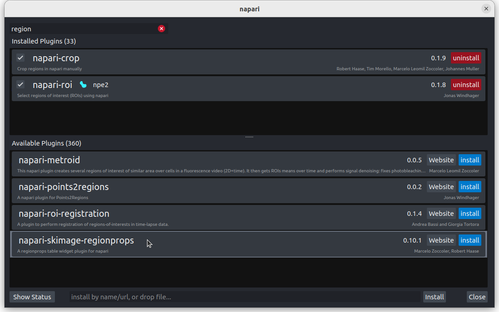
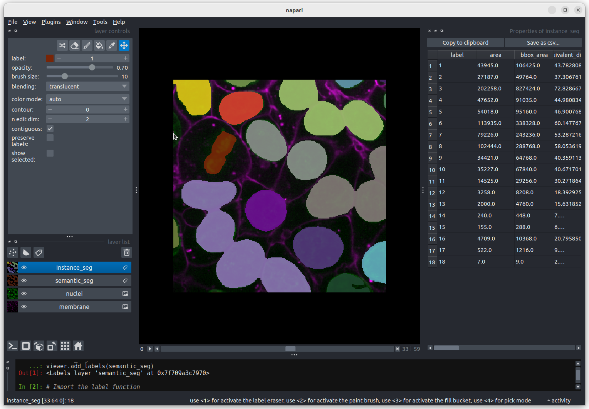
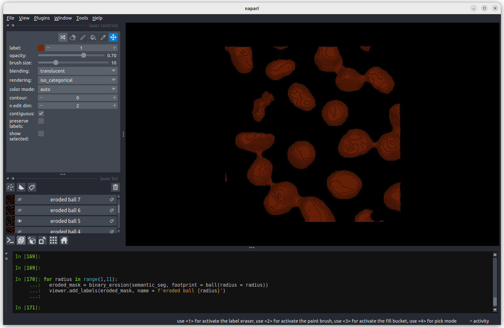
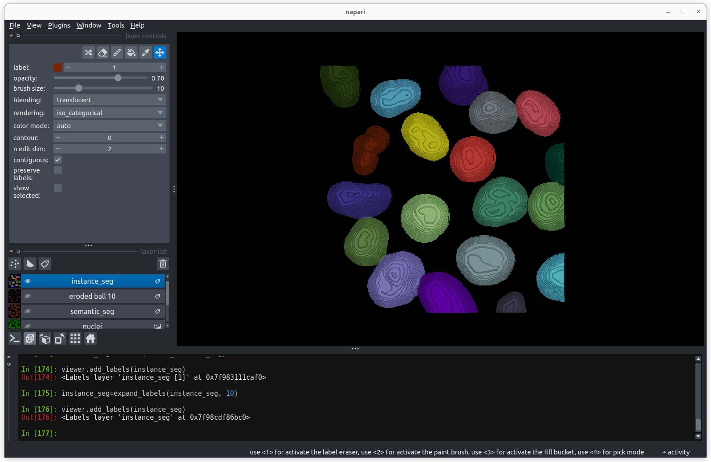

Content from Imaging Software
Last updated on 2024-04-26 | Edit this page
Estimated time 55 minutes
Overview
Questions
- What are the different software options for viewing microscopy images?
- How can Napari be used to view images?
Objectives
- Explain the pros and cons of different image visualisation tools (e.g. ImageJ, Napari and proprietary options)
- Use Napari to open images
- Navigate the Napari viewer (pan/zoom/swapping between 2D and 3D views…)
- Explain the main parts of the Napari user interface
Choosing the right tool for the job
Light microscopes can produce a very wide range of image data (we’ll see some examples in the multi-dimensional images episode) - for example:
- 2D or 3D
- Time series or snapshots
- Different channels
- Small to large datasets
With such a wide range of data, there comes a huge variety of software that can work with these images. Different software may be specialised to specific types of image data, or to specific research fields. There is no one ‘right’ software to use - it’s about choosing the right tool for yourself, your data, and your research question!
Some points to consider when choosing software are:
What is common in your research field?
Having a good community around the software you work with can be extremely helpful - so it’s worth considering what is popular in your department, or in relevant papers in your field.Open source or proprietary?
We’ll look at this more in the next section, but it’s important to consider if the software you are using is freely available, or requires a one-off payment or a regular subscription fee to use.Support for image types?
For example, does it support 3D images, or timeseries?Can it be automated/customised/extended?
Can you automate certain steps with your own scripts or plugins? This is useful to make sure your analysis steps can be easily shared and reproduced by other researchers. It also enables you to add extra features to a piece of software, and automate repetitive steps for large numbers of images.
What are scripts and plugins?
Scripts and plugins are ways to automate certain software steps or add new features.
Scripts
Scripts are lists of commands to be carried out by a piece of software e.g. load an image, then threshold it, then measure its size… They are normally used to automate certain processing steps - for example, rather than having to load each image individually and click the same buttons again and again in the user interface, a script could load each image automatically and run all those steps in one go. Not only does this save time and reduce manual errors, but it also ensures your workflow can easily be shared and reproduced by other researchers.
Plugins
Plugins, in contrast to scripts, are focused on adding optional new features to a piece of software (rather than automating use of existing features). They allow members of the community, outside the main team that develops the software, to add features they need for a particular image type or processing task. They’re designed to be re-useable so other members of the community can easily benefit from these new features.
A good place to look for advice on software is the image.sc forum - a popular forum for image analysis (mostly related to biological or medical images).
Using the image.sc forum
Go to the image.sc forum and take a look at the pinned post called ‘Welcome to the Image.sc Forum!’
Search for posts in the category ‘Announcements’ tagged with ‘napari’
Search for posts in the category ‘Image Analysis’ tagged with ‘napari’
Click on some posts to see how questions and replies are laid out
Open source vs proprietary
A key factor to consider when choosing software is whether it is open source or proprietary:
Open source: Software that is made freely available to use and modify.
Proprietary: Software that is owned by a company and usually requires either a one-off fee or subscription to use.
Both can be extremely useful, and it is very likely that you will use a mix of both to view and analyse your images. For example, proprietary software is often provided by the manufacturer when a microscope is purchased. You will likely use this during acquisition of your images and for some processing steps after.
There are pros and cons to both, and it’s worth considering the following:
Cost
One of the biggest advantages of open source software is that it is
free. This means it is always available, even if you move to a different
institution that may not have paid for other proprietary software.
Development funding/team
Proprietary software is usually maintained by a large team of developers
that are funded full time. This may mean it is more stable and
thoroughly tested/validated than some open-source software. Some
open-source projects will be maintained by large teams with very
thorough testing, while others will only have a single developer
part-time.
Flexibility/extension
Open-source software tends to be easier to extend with new features, and
more flexible to accommodate a wide variety of workflows. Although, many
pieces of proprietary software have a plugin system or scripting to
allow automation.
Open file formats and workflows
Open-source software uses open file formats and workflows, so anyone can
see the details of how the analysis is done. Proprietary software tends
to keep the implementation details hidden and use file formats that
can’t be opened easily in other software.
As always, the right software to use will depend on your preference, your data and your research question. This being said, we will only use open-source software in this course, and we encourage using open-source software where possible.
Fiji/ImageJ and Napari
While there are many pieces of software to choose from, two of the most popular open-source options are Fiji/ImageJ and Napari. They are both:
- Freely available
- ‘General’ imaging software i.e. applicable to many different research fields
- Supporting a wide range of image types
- Customisable with scripts + plugins
Both are great options for working with a wide variety of images - so why choose one over the other? Some of the main differences are listed below if you are interested:
Python vs Java
A big advantage of Napari is that it is made with the Python programming
language (vs Fiji/ImageJ which is made with Java). In general, this
makes it easier to extend with scripts and plugins as Python tends to be
more widely used in the research community. It also means Napari can
easily integrate with other python tools e.g. Python’s popular machine
learning libraries.
Maturity
Fiji/ImageJ has been actively developed for many years now (>20
years), while Napari is a more recent development starting
around 2018. This difference in age comes with pros and cons - in
general, it means that the core features and layout of Fiji/ImageJ are
very well established, and less likely to change than Napari. With
Napari, you will likely have to adjust your image processing workflow
with new versions, or update any scripts/plugins more often. Equally, as
Napari is new and rapidly growing in popularity, it is quickly gaining
new features and attracting a wide range of new plugin developers.
Built-in tools
Fiji/ImageJ comes with many image processing tools built-in by default -
e.g. making image histograms, thresholding and gaussian blur (we will
look at these terms in the filters and thresholding
episode). Napari, in contrast, is more minimal by default - mostly
focusing on image display. It requires installation of additional
plugins to add many of these features.
Specific plugins
There are excellent plugins available for Fiji/ImageJ and Napari that
focus on specific types of image data or processing steps. The
availability of a specific plugin will often be a deciding factor on
whether to use Fiji/ImageJ or Napari for your project.
Ease of installation and user interface
As Fiji/ImageJ has been in development for longer, it tends to be
simpler to install than Napari (especially for those with no prior
Python experience). In addition, as it has more built-in image
processing tools, it tends to be simpler to use fully from its user
interface. Napari meanwhile is often strongest when you combine it with
some Python scripting (although this isn’t required for many
workflows!)
For this lesson, we will use Napari as our software of choice. It’s worth bearing in mind though that Fiji/ImageJ can be a useful alternative - and many workflows will actually use both Fiji/ImageJ and Napari together! Again, it’s about choosing the right tool for your data and research question.
Opening Napari
Let’s get started by opening a new Napari window - you should have already followed the installation instructions. Note this can take a while the first time, so give it a few minutes!

Opening images
Napari comes with some example images - let’s open one now. Go to the
top menu-bar of Napari and select:File > Open Sample > napari builtins > Cells (3D+2Ch)
You should see a fluorescence microscopy image of some cells:

Napari’s User interface
Napari’s user interface is split into a few main sections, as you can see in the diagram below (note that on Macs the main menu will appear in the upper ribbon, rather than inside the Napari window):

Let’s take a brief look at each of these sections - for full information see the Napari documentation.
Canvas
The canvas is the main part of the Napari user interface. This is where we display and interact with our images.
Try moving around the cells image with the following commands:
Pan - Click and drag
Zoom - Scroll in/out (use the same gestures with your mouse
that you would use to scroll up/down
in a document)Dimension sliders
Dimension sliders appear at the bottom of the canvas depending on the type of image displayed. For example, here we have a 3D image of some cells, which consists of a stack of 2D images. If we drag the slider at the bottom of the image, we move up and down in this stack:

Pressing the arrow buttons at either end of the slider steps through one slice at a time. Also, pressing the ‘play’ button at the very left of the slider moves automatically through the stack until pressed again.

We will see in later episodes that more sliders can appear if our image has more dimensions (e.g. time series, or further channels).
Viewer buttons
The viewer buttons (the row of buttons at the bottom left of Napari) control various aspects of the Napari viewer:
Console 
This button opens Napari’s built-in python console - we’ll use the console more in later episodes.
2D/3D  /
/ 
This switches the canvas between 2D and 3D display. Try switching to the 3D view for the cells image:

The controls for moving in 3D are similar to those for 2D:
Rotate - Click and drag
Pan - Shift + click and drag
Zoom - Scroll in/outRoll dimensions 
This changes which image dimensions are displayed in the viewer. For example, let’s switch back to the 2D view for our cells image and press the roll dimensions button multiple times. You’ll see that it switches between different orthogonal views (i.e. at 90 degrees to our starting view). Pressing it 3 times will bring us back to the original orientation.

Transpose dimensions 
This button swaps the two currently displayed dimensions. Again trying this for our cells image, we see that the image becomes flipped. Pressing the button again brings us back to the original orientation.
Grid 
This button displays all image layers in a grid (+ any additional layer types, as we’ll see later in the episode). Using this for our cells image, we see the nuclei (green) displayed next to the cell membranes (purple), rather than on top of each other.
Layer list
Now that we’ve seen the main controls for the viewer, let’s look at
the layer list. ‘Layers’ are how Napari displays multiple items together
in the viewer. For example, currently our layer list contains two items
- ‘nuclei’ and ‘membrane’. These are both Image layers and
are displayed in order, with the nuclei on top and membrane
underneath.

We can show/hide each layer by clicking the eye icon on the left side of their row. We can also rename them by double clicking on the row.
We can change the order of layers by dragging and dropping items in the layer list. For example, try dragging the membrane layer above the nuclei. You should see the nuclei disappear from the viewer (as they are now hidden by the membrane image on top).

Here we only have Image layers, but there are many more
types like Points, Shapes and
Labels, some of which we will see later in the episode.
Layer controls
Next let’s look at the layer controls - this area shows controls only
for the currently selected layer (i.e. the one that is highlighted in
blue in the layer list). For example, if we click on the nuclei layer
then we can see a colormap of green, while if we click on
the membrane layer we see a colormap of magenta.
Controls will also vary depending on layer type (like
Image vs Points) as we will see later in this episode.
Let’s take a quick look at some of the main image layer controls:
Opacity
This changes the opacity of the layer - lower values are more transparent. For example, reducing the opacity of the membrane layer (if it is still on top of the nuclei), allows us to see the nuclei again.
Contrast limits
We’ll discuss this in detail in the image display episode, but briefly - the contrast limits adjust what parts of the image we can see and how bright they appear in the viewer. Moving the left node adjusts what is shown as fully black, while moving the right node adjusts what is shown as fully bright.
Colormap
Again, we’ll discuss this in detail in the image display episode, but briefly - the colormap determines what colours an image is displayed with. Clicking in the dropdown shows a wide range of options that you can swap between.
Blending
This controls how multiple layers are blended together to give the final result in the viewer. There are many different options to choose from. For example, let’s put the nuclei layer back on top of the membrane and change its blending to ‘opaque’. You should see that it now completely hides the membrane layer underneath. Changing the blending back to ‘additive’ will allow both the nucleus and membrane layers to be seen together again.

- Click on the nuclei in the layer list
- Change the colormap to cyan
- Click on the membrane in the layer list
- Change the colormap to red
- Move the right contrast limits node to the left to make the membranes appear brighter
Layer buttons
So far we have only looked at Image layers, but there
are many more types supported by Napari. The layer buttons allow us to
add additional layers of these new types:
Points 
This button creates a new points layer. This can be used to mark specific locations in an image.
Shapes 
This button creates a new shapes layer. Shapes can be used to mark regions of interest e.g. with rectangles, ellipses or lines.
Labels 
This button creates a new labels layer. This is usually used to label specific regions in an image e.g. to label individual nuclei.
Remove layer 
This button removes the currently selected layer (highlighted in blue) from the layer list.
Point layers
Let’s take a quick look at one of these new layer types - the
Points layer.
Add a new points layer by clicking the points button. Investigate the different layer controls - what do they do? Note that hovering over buttons will usually show a summary tooltip.
Add points and adjust settings to give the result below:

- Click the ‘add points’ button

- Click on nuclei to add points on top of them
- Click the ‘select points’ button

- Click on the point over the dividing nucleus
- Increase the point size slider
- Change its symbol to star
- Change its face colour to purple
- change its edge colour to white
Key Points
- There are many software options for light microscopy images
- Napari and Fiji/ImageJ are popular open-source options
- Napari’s user interface is split into a few main sections including the canvas, layer list, layer controls…
- Layers can be of different types e.g.
Image,Point,Label - Different layer types have different layer controls
Content from What is an image?
Last updated on 2024-04-26 | Edit this page
Estimated time 55 minutes
Overview
Questions
- How are images represented in the computer?
Objectives
Explain how a digital image is made of pixels
Find the value of different pixels in an image in Napari
Determine an image’s dimensions (numpy ndarray
.shape)Determine an image’s data type (numpy ndarray
.dtype)Explain the coordinate system used for images
In the last episode, we looked at how to view images in Napari. Let’s take a step back now and try to understand how Napari (or ImageJ or any other viewer) understands how to display images properly. To do that we must first be able to answer the fundamental question - what is an image?
Pixels
Let’s start by removing all the layers we added to the Napari viewer last episode. Then we can open a new sample image:
Click on the top layer in the layer list and shift + click the bottom layer. This should highlight all layers in blue.
Press the remove layer button
Go to the top menu-bar of Napari and select:
File > Open Sample > napari builtins > Human Mitosis

This 2D image shows the nuclei of human cells undergoing mitosis. If we really zoom in up-close by scrolling, we can see that this image is actually made up of many small squares with different brightness values. These squares are the image’s pixels (or ‘picture elements’) and are the individual units that make up all digital images.
If we hover over these pixels with the mouse cursor, we can see that each pixel has a specific value. Try hovering over pixels in dark and bright areas of the image and see how the value changes in the bottom left of the viewer:
You should see that brighter areas have higher values than darker areas (we’ll see exactly how these values are converted to colours in the image display episode).
Images are arrays of numbers
We’ve seen that images are made of individual units called pixels
that have specific values - but how is an image really represented in
the computer? Let’s dig deeper into Napari’s Image
layers…
First, open Napari’s built-in Python console by pressing the console
button  . Note
this can take a few seconds to open, so give it some time:
. Note
this can take a few seconds to open, so give it some time:

Let’s look at the human mitosis image more closely - copy the text in the ‘Python’ cell below into Napari’s console and then press the Enter key. You should see it returns text that matches the ‘Output’ cell below in response.
All of the information about the Napari viewer can be accessed
through the console with a variable called viewer. A
viewer has 1 to many layers, and here we access the top
(first) layer with viewer.layers[0]. Then, to access the
actual image data stored in that layer, we retrieve it with
.data:
PYTHON
# Get the image data for the first layer in Napari
image = viewer.layers[0].data
# Print the image values and type
print(image)
print(type(image))OUTPUT
[[ 8 8 8 ... 63 78 75]
[ 8 8 7 ... 67 71 71]
[ 9 8 8 ... 53 64 66]
...
[ 8 9 8 ... 17 24 59]
[ 8 8 8 ... 17 22 55]
[ 8 8 8 ... 16 18 38]]
<class 'numpy.ndarray'>You should see that a series of numbers are printed out that are
stored in a Python data type called a numpy.ndarray.
Fundamentally, this means that all images are really just arrays of
numbers (one number per pixel). Arrays are just rectangular grids of
numbers, much like a spreadsheet. Napari is reading those values and
converting them into squares of particular colours for us to see in the
viewer, but this is only to help us interpret the image contents - the
numbers are the real underlying data.
For example, look at the simplified image of an arrow below. On the left is the array of numbers, with the corresponding image display on the right. This is called a 4 by 4 image, as it has 4 rows and 4 columns:

In Napari this array is a numpy.ndarray. NumPy is a popular python package that
provides ‘n-dimensional arrays’ (or ‘ndarray’ for short). N-dimensional
just means they can support any number of dimensions - for example, 2D
(squares/rectangles of numbers), 3D (cubes/cuboids of numbers) and
beyond (like time series, images with many channels etc. where we would
have multiple rectangles or cuboids of data which provide further
information all at the same location).
Creating an image
Where do the numbers in our image array come from? The exact details of how an image is created will depend on the type of microscope you are using e.g. widefield, confocal, superresolution etc. In general though, we have 3 main parts:
- Sample: the object we want to image e.g. some cells
- Objective lens: the lens that gathers the light and focuses it for detection
- Detector: the device that detects the light to form the digital image e.g. a CCD camera
To briefly summarise for a fluorescence microscopy image:
an excitation light source (e.g. a laser) illuminates the sample, and
this light is absorbed by a fluorescent label. This causes it to emit
light which is then gathered and focused by the objective lens, before
hitting the detector. The detector might be a single element (e.g. in a
laser-scanning microscope) or composed of an array of many small, light
sensitive areas - these are physical pixels, that will correspond to the
pixels in the final image. When light hits one of the detector elements
it is converted into electrons, with more light resulting in more
electrons and a higher final value for that pixel.
The important factor to understand is that the final pixel value is only ever an approximation of the real sample. Many factors will affect this final result including the microscope optics, detector performance etc.
Discussion
Read the ‘A simple microscope’ section of Pete Bankhead’s bioimage book.
- What are some factors that influence pixel values?
- Can you come up with suggestions for any more?
Image dimensions
Let’s return to our human mitosis image and explore some of the key features of its image array. First, what size is it?
We can find this out by running the following in Napari’s console:
OUTPUT
(512, 512)The array size (also known as its dimensions) is stored in the
.shape. Here we see that it is (512, 512)
meaning this image is 512 pixels high and 512 pixels wide. Two values
are printed as this image is two dimensional (2D), for a 3D image there
would be 3, for a 4D image (e.g. with an additional time series) there
would be 4 and so on…
Image data type
The other key feature of an image array is its ‘data type’ - this
controls which values can be stored inside of it. For example, let’s
look at the data type for our human mitosis image - this is stored in
.dtype:
OUTPUT
dtype('uint8')We see that the data type (or ‘dtype’ for short) is
uint8. This is short for ‘unsigned integer 8-bit’. Let’s
break this down further into two parts - the type (unsigned integer) and
the bit-depth (8-bit).
Type
The type determines what kind of values can be stored in the array, for example:
- Unsigned integer: positive whole numbers
- Signed integer: positive and negative whole numbers
- Float: positive and negative numbers with a decimal point e.g. 3.14
For our mitosis image, ‘unsigned integer’ means that only positive whole numbers can be stored inside. You can see this by hovering over the pixels in the image again in Napari - the pixel value down in the bottom left is always a positive whole number.
Bit depth
The bit depth determines the range of values that can be stored e.g. only values between 0 and 255. This is directly related to how the array is stored in the computer.
In the computer, each pixel value will ultimately be stored in some
binary format as a series of ones and zeros. Each of these ones or zeros
is known as a ‘bit’, and the ‘bit depth’ is the number of bits used to
store each value. For example, our mitosis image uses 8 bits to store
each value (i.e. a series of 8 ones or zeros like
00000000, or 01101101…).
The reason the bit depth is so important is that it dictates the number of different values that can be stored. In fact it is equal to:
\[\large \text{Number of values} = 2^{\text{(bit depth)}}\]
Going back to our mitosis image, since it is stored as integers with a bit-depth of 8, this means that it can store \(2^8 = 256\) different values. This is equal to a range of 0-255 for unsigned integers.
We can verify this by looking at the maximum value of the mitosis image:
OUTPUT
255You can also see this by hovering over the brightest nuclei in the viewer and examining their pixel values. Even the brightest nuclei won’t exceed the limit of 255.
Dimensions and data types
Let’s open a new image by removing all layers from the Napari viewer, then copying and pasting the following lines into the Napari console:
PYTHON
from skimage import data
viewer.add_image(data.brain()[9, :, :], name="brain")
image = viewer.layers["brain"].dataThis opens a new 2D image of part of a human head X-ray.
What are the dimensions of this image?
What type and bit depth is this image?
What are the possible min/max values of this image array, based on the bit depth?
Common data types
NumPy supports a very wide range of data types, but there are a few that are most common for image data:
| NumPy datatype | Full name |
|---|---|
uint8 |
Unsigned integer 8-bit |
uint16 |
Unsigned integer 16-bit |
float32 |
Float 32-bit |
float64 |
Float 64-bit |
uint8 and uint16 are most common for images
from light microscopes. float32 and float64
are common during image processing (as we will see in later
episodes).
Choosing a bit depth
Most images are either 8-bit or 16-bit - so how to choose which to use? A higher bit depth will allow a wider range of values to be stored, but it will also result in larger file sizes for the resulting images. In general, a 16-bit image will have a file size that is about twice as large as an 8-bit image if no compression is used (we’ll discuss compression in the filetypes and metadata episode).
The best bit depth choice will depend on your particular imaging experiment and research question. For example, if you know you have to recognise features that only differ slightly in their brightness, then you will likely need 16-bit to capture this. Equally, if you know that you will need to collect a very large number of images and 8-bit is sufficient to see your features of interest, then 8-bit may be a better choice to reduce the required file storage space. As always it’s about choosing the best fit for your specific project!
For more information on bit depths and types - we highly recommend the ‘Types & bit-depths’ chapter from Pete Bankhead’s free bioimage book.
Clipping and overflow
It’s important to be aware of what image type and bit depth you are using. If you try to store values outside of the valid range, this can lead to clipping and overflow.
Clipping: Values outside the valid range are changed to the closest valid value. For example, storing 1000 in a
uint8image may result in 255 being stored instead (the max value)Overflow: For NumPy arrays, values outside the valid range are ‘wrapped around’ to give the new result. For example, storing 256 in a
uint8image (max 255) would give 0, 257 would give 1 and so on…
Clipping and overflow result in data loss - you can’t get the original values back! So it’s always good to keep the data type in mind when doing image processing operations (as we will see in later episodes), and also when converting between different bit depths.
Coordinate system
We’ve seen that images are arrays of numbers with a specific shape (dimensions) and data type. How do we access specific values from this array? What coordinate system is Napari using?
To look into this, let’s hover over pixels in our mitosis image and
examine the coordinates that appear to the left of the pixel value. If
you closed the mitosis image, then open it again by removing all layers
and selecting:
File > Open Sample > napari builtins > Human Mitosis:

As you move around, you should see that the lowest coordinate values are at the top left corner, with the first value increasing as you move down and the second value increasing as you move to the right. This is different to the standard coordinate systems you may be used to (for example, from making graphs):
Note that Napari lists coordinates as [y, x] or [rows, columns], so e.g. [1,3] would be the pixel in row 1 and column 3. Remember that these coordinates always start from 0 as you can see in the diagram below:

For the mitosis image, these coordinates are in pixels, but we’ll see in the filetypes and metadata episode that images can also be scaled based on resolution to represent distances in the physical world (e.g. in micrometres). Also, bear in mind that images with more dimensions (e.g. a 3D image) will have longer coordinates like [z, y, x]…
Reading and modifying pixel values
First, make sure you only have the human mitosis image open (close any others). Run the following line in the console to ensure you are referencing the correct image:
PYTHON
# Get the image data for the layer called 'human_mitosis'
image = viewer.layers["human_mitosis"].dataPixel values can be read by hovering over them in the viewer, or by running the following in the console:
Pixel values can be changed by running the following in the console:
PYTHON
# Replace y and x with the correct y and x coordinate, and
# 'pixel_value' with the desired new pixel value e.g. image[3, 5] = 10
image[y, x] = pixel_value
viewer.layers["human_mitosis"].refresh()Given this information:
- What is the pixel value at x=213 and y=115?
- What is the pixel value at x=25 and y=63?
- Change the value of the pixel at x=10 and y=15 to 200. Check the new value - is it correct? If not, why not?
- Change the value of the pixel at x=10 and y=15 to 300. Check the new value - is it correct? If not, why not?
Key Points
- Digital images are made of pixels
- Digital images store these pixels as arrays of numbers
- Light microscopy images are only an approximation of the real sample
- Napari (and Python more widely) use NumPy arrays to store images -
these have a
shapeanddtype - Most images are 8-bit or 16-bit unsigned integer
- Images use a coordinate system with (0,0) at the top left, x increasing to the right, and y increasing down
Content from Image display
Last updated on 2024-04-26 | Edit this page
Estimated time 55 minutes
Overview
Questions
- How are pixel values converted into colours for display?
Objectives
- Create a histogram for an image
- Install plugins from Napari Hub
- Change colormap (LUT) in Napari
- Adjust brightness and contrast in Napari
- Explain the importance of always retaining a copy of the original pixel values
Image array and display
Last episode we saw that images are arrays of numbers with specific dimensions and data type. Napari reads these numbers (pixel values) and converts them into colours on our display, allowing us to view the image. Exactly how this conversion is done can vary greatly, and is the topic of this episode.
For example, take the image array shown below. Depending on the display settings, it can look very different inside Napari:

Equally, image arrays with different pixel values can look the same in Napari depending on the display settings:

In summary, we can’t rely on appearance alone to understand the underlying pixel values. Display settings (like the colormap, brightness and contrast - as we will see below) have a big impact on how the final image looks.
Napari plugins
How can we quickly assess the pixel values in an image? We could hover over pixels in Napari, or print the array into Napari’s console (as we saw last episode), but these are hard to interpret at a glance. A much better option is to use an image histogram.
To do this, we will have to install a new plugin for Napari. Remember from the Imaging Software episode that plugins add new features to a piece of software. Napari has hundreds of plugins available on the napari hub website.
Let’s start by going to the napari hub and searching for ‘matplotlib’:

You should see ‘napari Matplotlib’ appear in the list (if not, try
scrolling further down the page). If we click on
napari matplotlib this opens a summary of the plugin with
links to the documentation. There’s also a useful ‘Activity’ tab that
summarises the number of installs and maintenance history of the
plugin:
Now that we’ve found the plugin we want to use, let’s go ahead and
install it in Napari. Note that some plugins have special requirements
for installation, so it’s always worth checking their napari hub page
for any extra instructions. In the top menu bar of Napari select:Plugins > Install/Uninstall Plugins...

This should open a window summarising all installed plugins (at the top) and all available plugins to install (at the bottom). If we search for ‘matplotlib’ in the top searchbar, then ‘napari-matplotlib’ will appear under ‘Available Plugins’. Press the blue install button and wait for it to finish. You’ll then need to close and re-open Napari.
If all worked as planned, you should see a new option in the top
menubar under:Plugins > napari Matplotlib
Finding plugins
Napari hub contains hundreds of plugins with varying quality, written by many different developers. It can be difficult to choose which plugins to use!
- Search for cell tracking plugins on Napari hub
- Look at some of the plugin summaries and ‘Activity’ tabs
- What factors could help you decide if the plugin is well maintained?
- What factors could help you decide if the plugin is popular with Napari users?
Is a plugin well maintained?
Some factors to look for:
Last updated
Check when the plugin was last updated - was it recently? This is shown
in the search list summary and under ‘Maintenance’ in the activity tab.
In the activity tab, you can also look at a graph summarising the
‘commits’ over the past year - ‘commits’ are made when someone updates
their plugin with new changes.
Documentation
Is the plugin summary (+ any linked documentation) detailed enough to
explain how to use the plugin?
Is a plugin popular?
Some factors to look for:
Installs
Check how many times a plugin has been installed - a higher number of
installs usually means it’s more popular in the Napari community. The
installs are shown in the search list summary and under ‘Usage’ in the
activity tab. In the activity tab, you can also look at a graph
summarising the installs over the past year.
Image.sc
It can also be useful to search the plugin’s name on the image.sc forum to browse relevant
posts and see if other people had good experiences using it. Image.sc is
also a great place to get help and advice from other plugin users, or
the plugin’s developers.
Image histograms
Let’s use our newly installed plugin to look at the human mitosis
image. If you don’t have it open, go the top menubar and select:File > Open Sample > napari builtins > Human Mitosis
Then open the image histogram with:Plugins > napari Matplotlib > Histogram
You should see a histogram open on the right side of the image:

This histogram summarises the pixel values of the entire image. On the x axis is the pixel value which run from 0-255 for this 8-bit image. This is split into a number of ‘bins’ of a certain width (for example, it could be 0-10, 11-20 and so on…). Each bin has a blue bar whose height represents the number of pixels with values in that bin. So, for example, for our mitosis image we see the highest bars to the left, with shorter bars to the right. This means this image has a lot of very dark (low intensity) pixels and fewer bright (high intensity) pixels.
The vertical white lines at 0 and 255 represent the current ‘contrast limits’ - we’ll look at this in detail in a later section of this episode.
Let’s quickly compare to another image. Open the ‘coins’ image
with:File > Open Sample > napari builtins > Coins

From the histogram, we can see that this image has a wider spread of pixel values. There are bars of similar height across many different values (rather than just one big peak at the left hand side).
Image histograms are a great way to quickly summarise and compare pixel values of different images.
- a - 3
- b - 4
- c - 2
- d - 1
Changing display settings
What happens to pixel values when we change the display settings? Try changing the contrast limits or colormap in the layer controls. You should see that the blue bars of the histogram stay the same, no matter what settings you change i.e. the display settings don’t affect the underlying pixel values.
This is one of the reasons it’s important to use software designed for scientific analysis to work with your light microscopy images. Software like Napari and ImageJ will try to ensure that your pixel values remain unchanged, while other image editing software (designed for working with photographs) may change the pixel values in unexpected ways. Also, even with scientific software, some image processing steps (that we’ll see in later episodes) will change the pixel values.
Keep this in mind and make sure you always retain a copy of your original data, in its original file format! We’ll see in the ‘Filetypes and metadata’ episode that original image files contain important metadata that should be kept for future reference.
Colormaps / LUTs
Let’s dig deeper into Napari’s colormaps. As we saw in the ‘What is an image?’ episode, images are represented by arrays of numbers (pixel values) with certain dimensions and data type. Napari (or any other image viewer) has to convert these numbers into coloured squares on our screen to allow us to view and interpret the image. Colormaps (also known as lookup tables or LUTs) are a way to convert pixel values into corresponding colours for display. For example, remember the image at the beginning of this episode, showing an image array using three different colormaps:
Napari supports a wide range of colormaps that can be selected from the ‘colormap’ menu in the layer controls (as we saw in the Imaging Software episode). For example, see the diagram below showing the ‘gray’ colormap, where every pixel value from 0-255 is matched to a shade of gray:

See the diagram below for examples of 4 different colormaps applied to the ‘coins’ image from Napari, along with corresponding image histograms:

Why would we want to use different colormaps?
- to highlight specific features in an image
- to help with overlaying multiple images, as we saw in the Imaging Software episode when we displayed green nuclei and magenta membranes together.
- to help interpretation of an image. For example, if we used a red fluorescent label in an experiment, then using a red colormap might help people understand the image quickly.
Brightness and contrast
As the final section of this episode, let’s learn more about the ‘contrast limits’ in Napari. As we saw in the Imaging Software episode, adjusting the contrast limits in the layer controls changes how bright different parts of the image are displayed. What is really going on here though?
In fact, the ‘contrast limits’ are adjusting how our colormap gets applied to the image. For example, consider the standard gray colormap:

For an 8-bit image, the range of colours from black to white are normally spread from 0 (the minimum pixel value) to 255 (the maximum pixel value). If we move the left contrast limits node, we change where the colormap starts from e.g. for a value of 150 we get:

Now all the colours from black to white are spread over a smaller
range of pixel values from 150-255 and everything below 150 is set to
black. Note that in Napari you can set specific values for the contrast
limits by right clicking on the contrast limits slider. As you adjust
the contrast limits, the vertical white lines on the
napari-matplotlib histogram will move to match.
If we move the right contrast limits node, we change where the colormap ends (i.e. where pixels are fully white). For example, for contrast limits of 150 and 200:

Now the range of colours from black to white only cover the pixel values from 150-200, everything below is black and everything above is white.
Why do we need to adjust contrast limits?
to allow us to see low contrast features. Some parts of your image may only differ slightly in their pixel value (low contrast). Bringing the contrast limits closer together allows a small change in pixel value to be represented by a bigger change in colour from the colormap.
to focus on specific features. For example, increasing the lower contrast limit will remove any low intensity parts of the image from the display.
Adjusting contrast
Open the Napari console with the  button
and copy and paste the code below:
button
and copy and paste the code below:
import numpy as np
from skimage.draw import disk
image = np.full((100,100), 10, dtype="uint8")
image[:, 50:100] = 245
image[disk((50, 25),15)] = 11
image[disk((50, 75),15)] = 247
viewer.add_image(image)This 2D image contains two hidden circles:
- Adjust Napari’s contrast limits to view both
- What contrast limits allow you to see each circle? (remember you can right click on the contrast limit bar to see specific values). Why do these limits work?
The left circle can be seen with limits of e.g. 0 and 33
These limits work because the background on the left side of the image has a pixel value of 10 and the circle has a value of 11. By moving the upper contrast limit to the left we force the colormap to go from black to white over a smaller range of pixel values. This allows this small difference in pixel value to be represented by a larger difference in colour and therefore made visible.
The right circle can be seen with limits of e.g. 231 and 255. This works for a very similar reason - the background has a pixel value of 245 and the circle has a value of 247.
Key Points
- The same image array can be displayed in many different ways in Napari
- Image histograms provide a useful overview of the pixel values in an image
- Plugins can be searched for on Napari hub and installed via Napari
- Colormaps (or LUTs) map pixel values to colours
- Contrast limits change the range of pixel values the colormap is spread over
Content from Multi-dimensional images
Last updated on 2024-04-26 | Edit this page
Estimated time 60 minutes
Overview
Questions
- How do we visualise and work with images with more than 2 dimensions?
Objectives
- Explain how different axes (xyz, channels, time) are stored in image arrays and displayed
- Open and navigate images with different dimensions in Napari
- Explain what RGB images are and how they are handled in Napari
- Split and merge channels in Napari
Image dimensions / axes
As we saw in the ‘What is an image?’ episode, image pixel values are stored as arrays of numbers with certain dimensions and data type. So far we have focused on grayscale 2D images that are represented by a 2D array:
Light microscopy data varies greatly though, and often has more dimensions representing:
Time (t):
Multiple images of the same sample over a certain time period - also known as a ‘time series’. This is useful to evaluate dynamic processes.Channels (c):
Usually, this is multiple images of the same sample under different wavelengths of light (e.g. red, green, blue channels, or wavelengths specific to certain fluorescent markers). Note that channels can represent many more values though, as we will see below.Depth (z):
Multiple images of the same sample, taken at different depths. This will produce a 3D volume of images, allowing the shape and position of objects to be understood in full 3D.
These images will be stored as arrays that have more than two dimensions. Let’s start with our familiar human mitosis image, and work up to some more complex imaging data.
2D
Go to the top menu-bar of Napari and select:File > Open Sample > napari builtins > Human Mitosis
We can see this image only has two dimensions (or two ‘axes’ as
they’re also known) due to the lack of sliders under the image, and by
checking its shape in the Napari console. Remember that we looked at how to open
the console and how to check the .shape in
detail in the ‘What is an image?’
episode:
OUTPUT
# (y, x)
(512, 512)Note that comments have been added to all output sections in this episode (the lines starting with #). These state what the dimensions represent (e.g. (y, x) for the y and x axes). These comments won’t appear in the output in your console.
3D
Let’s remove the mitosis image by clicking the remove layer button
 at
the top right of the layer list. Then, let’s open a new 3D image:
at
the top right of the layer list. Then, let’s open a new 3D image:File > Open Sample > napari builtins > Brain (3D)

This image shows part of a human head acquired using X-ray Computerised Tomography (CT). We can see it has three dimensions due to the slider at the base of the image, and the shape output:
OUTPUT
# (z, y, x)
(10, 256, 256)This 3D image can be thought of as a stack of ten 2D images, with each image containing a 256x256 array. The x/y axes point along the width/height of the first 2D image, and the z axis points along the stack. It is stored as a 3D array:

In Napari (and Python in general), dimensions are referred to by their index e.g. here dimension 0 is the z axis, dimension 1 is the y axis and dimension 2 is the x axis. We can check this in Napari by looking at the number at the very left of the slider. Here it’s labelled ‘0’, showing that it controls movement along dimension 0 (i.e. the z axis).
Axis labels
By default, sliders will be labelled by the index of the dimension they move along e.g. 0, 1, 2… Note that it is possible to re-name these though! For example, if you click on the number at the left of the slider, you can freely type in a new value. This can be useful to label sliders with informative names like ‘z’, or ‘time’.
You can also check which labels are currently being used with:
Channels
Next, let’s look at a 3D image where an additional (fourth) dimension
contains data from different ‘channels’. Remove the brain image and
select:File > Open Sample > napari builtins > Cells (3D+2Ch)
Image channels can be used to store data from multiple sources for the same location. For example, consider the diagram below. On the left is shown a 2D image array overlaid on a simple cell with a nucleus. Each of the pixel locations e.g. (0, 0), (1, 1), (2, 1)… can be considered as sampling locations where different measurements can be made. For example, this could be the intensity of light detected with different wavelengths (like red, green…) at each location, or it could be measurements of properties like the surface height and elasticity at each location (like from scanning probe microscopy). These separate data sources are stored as ‘channels’ in our image.
This diagram shows an example of a 2D image with channels, but this can also be extended to 3D images, as we will see now.
Fluorescence microscopy images, like the one we currently have open in Napari, are common examples of images with multiple channels. In flourescence microscopy, different ‘flourophores’ are used that target specific features (like the nucleus or cell membrane) and emit light of different wavelengths. Images are taken filtering for each of these wavelengths in turn, giving one image channel per fluorophore. In this case, there are two channels - one for a flourophore targeting the nucleus, and one for a fluorophore targeting the cell membrane. These are shown as separate image layers in Napari’s layer list:
Recall from the imaging software episode that ‘layers’ are how Napari displays multiple items together in the viewer. Each layer could be an entire image, part of an image like a single channel, a series of points or shapes etc. Each layer is displayed as a named item in the layer list, and can have various display settings adjusted in the layer controls.
Let’s check the shape of both layers:
PYTHON
nuclei = viewer.layers["nuclei"].data
membrane = viewer.layers["membrane"].data
print(nuclei.shape)
print(membrane.shape)OUTPUT
# (z, y, x)
(60, 256, 256)
(60, 256, 256)This shows that each layer contains a 3D image array of size 60x256x256. Each 3D image represents the intensity of light detected at each (z, y, x) location with a wavelength corresponding to the given fluorophore.
Here, Napari has automatically recognised that this image contains
different channels and separated them into different image layers. This
is not always the case though, and sometimes it may be preferable
to not split the channels into separate layers! We can merge our
channels again by selecting both image layers (shift + click so they’re
both highlighted in blue), right clicking on them and selecting:Merge to stack
You should see the two image layers disappear, and a new combined layer appear in the layer list (labelled ‘membrane’). This image has an extra slider that allows switching channels - try moving both sliders and see how the image display changes.
We can check the image’s dimensions with:
OUTPUT
# (c, z, y, x)
(2, 60, 256, 256)Notice how these dimensions match combining the two layers shown above. Two arrays with 3 dimensions (60, 256, 256) are combined to give one array with four dimensions (2, 60, 256, 256) with the first axis representing the 2 channels. See the diagram below for a visualisation of how these 3D and 4D arrays compare:

As we’ve seen before, the labels on the left hand side of each slider in Napari matches the index of the dimension it moves along. The top slider (labelled 1) moves along the z axis, while the bottom slider (labelled 0) switches channels.
We can separate the channels again by right clicking on the
‘membrane’ image layer and selecting:Split Stack
Note that this resets the contrast limits for membrane and nuclei to defaults of the min/max possible values. You’ll need to adjust the contrast limits on the membrane layer to see it clearly again after splitting.
Reading channels in Napari
When we open the cells image through the Napari menu, it is really calling something like:
from skimage import data
viewer.add_image(data.cells3d(), channel_axis=1)This adds the cells 3D image (which is stored as zcyx), and specifies that dimension 1 is the channel axis. This allows Napari to split the channels automatically into different layers.
Usually when loading your own images into Napari e.g. with the napari-aicsimageio plugin (as we will see in the filetypes and metadata episode), the channel axis should be recognised automatically. If not, you may need to add the image via the console as above, manually stating the channel axis.
When to split channels into layers in Napari?
As we saw above, we have two choices when loading images with multiple channels into Napari:
Load the image as one Napari layer, and use a slider to change channel
Load each channel as a separate Napari layer, e.g. using the
channel_axis
Both are useful ways to view multichannel images, and which you choose will depend on your image and preference. Some pros and cons are shown below:
Channels as separate layers
Channels can be overlaid on top of each other (rather than only viewed one at a time)
Channels can be easily shown/hidden with the
 icons
iconsDisplay settings like contrast limits and colormaps can be controlled independently for each channel (rather than only for the entire image)
Entire image as one layer
Useful when handling a very large number of channels. For example, if we have hundreds of channels, then moving between them on a slider may be simpler and faster.
Napari can become slow, or even crash with a very large number of layers. Keeping the entire image as one layer can help prevent this.
Keeping the full image as one layer can be helpful when running certain processing operations across multiple channels at once
Time
You should have already downloaded the MitoCheck dataset as part of the setup instructions - if not, you can download it by clicking on ‘00001_01.ome.tiff’ on this page of the OME website.
To open it in Napari, remove any existing image layers, then drag and drop the file over the canvas. A popup may appear asking you to choose a ‘reader’ - you can select either ‘napari builtins’ or ‘napari-aicsimageio’. We’ll see in the next episode that the ‘napari-aicsimageio’ reader gives us access to useful image metadata.
Note this image can take a while to open, so give it some time!
Alternatively, you can select in the top menu-bar:File > Open File(s)...

This image is a 2D time series (tyx) of some human cells undergoing
mitosis. The slider at the bottom now moves through time, rather than z
or channels. Try moving the slider from left to right - you should see
some nuclei divide and the total number of nuclei increase. You can also
press the small  icon at
the left side of the slider to automatically move along it. The icon
will change into a
icon at
the left side of the slider to automatically move along it. The icon
will change into a  - pressing
this will stop the movement.
- pressing
this will stop the movement.
We can again check the image dimensions by running the following:
OUTPUT
# (t, y, x)
(93, 1024, 1344)Note that this image has a total of 3 dimensions, and so it will also be stored in a 3D array:

This makes the point that the dimensions don’t always represent the same quantities. For example, a 3D image array with shape (512, 512, 512) could represent a zyx, cyx or tyx image. We’ll discuss this more in the next section.
Dimension order
As we’ve seen so far, we can check the number and size of an image’s dimensions by running:
Napari reads this array and displays the image appropriately, with the correct number of sliders, based on these dimensions. It’s worth noting though that Napari doesn’t usually know what these different dimensions represent e.g. consider a 4 dimensional image with shape (512, 512, 512, 512). This could be tcyx, czyx, tzyx etc… Napari will just display it as an image with 2 additional sliders, not caring about exactly what each represents.
Python has certain conventions for the order of image axes (like scikit-image’s ‘coordinate conventions’ and aicsimageio’s reader) - but this tends to vary based on the library or plugin you’re using. These are not firm rules!
Therefore, it’s always worth checking you understand which axes are
being shown in any viewer and what they represent! Check against your
prior knowledge of the experimental setup, and check the metadata in the
original image (we’ll look at this in the next episode). If you want to
change how axes are displayed, remember you can use the roll or
transpose dimensions buttons as discussed in the imaging software episode. Also, if
loading the image manually from the console, you can provide some extra
information like the channel_axis parameter discussed
above.
Interpreting image dimensions
Remove all image layers, then open a new image by copying and pasting the following into Napari’s console:
This is a fluorescence microscopy image of mouse kidney tissue.
How many dimensions does it have?
What do each of those dimensions represent? (e.g. t, c, z, y, x) Hint: try using the roll dimensions button
to view different combinations of axes.Once you know which dimension represent channels, remove the image and load it again with:
PYTHON
# Replace ? with the correct channel axis
viewer.add_image(data.kidney(), rgb=False, channel_axis=?)Note that using the wrong channel axis may cause Napari to crash. If this happens to you just restart Napari and try again. Bear in mind, as we saw in the channel splitting section that large numbers of layers can be difficult to handle, so it isn’t usually advisable to use ‘channel_axis’ on dimensions with a large size.
- How many channels does the image have?
2
If we press the roll dimensions button  once, we can see an image of various cells and nuclei. Moving the slider
labelled ‘0’ seems to move up and down in this image (i.e. the z axis),
while moving the slider labelled ‘3’ changes between highlighting
different features like nuclei and cell edges (i.e. channels).
Therefore, the remaining two axes (1 and 2) must be y and x. This means
the image’s 4 dimensions are (z, y, x, c)
once, we can see an image of various cells and nuclei. Moving the slider
labelled ‘0’ seems to move up and down in this image (i.e. the z axis),
while moving the slider labelled ‘3’ changes between highlighting
different features like nuclei and cell edges (i.e. channels).
Therefore, the remaining two axes (1 and 2) must be y and x. This means
the image’s 4 dimensions are (z, y, x, c)
RGB
For the final part of this episode, let’s look at RGB images. RGB images can be considered as a special case of a 2D image with channels (yxc). In this case, there are always 3 channels - with one representing red (R), one representing green (G) and one representing blue (B).
Let’s open an example RGB image with the command below. Make sure you
remove any existing image layers first!File > Open Sample > napari builtins > Skin (RGB)

This image is a hematoxylin and eosin stained slide of dermis and epidermis (skin layers). Let’s check its shape:
OUTPUT
# (y, x, c)
(960, 1280, 3)Notice that the channels aren’t separated out into different image layers, as they were for the multichannel images above. Instead, they are shown combined together as a single image. If you hover your mouse over the image, you should see three pixel values printed in the bottom left representing (R, G, B).

We can see these different channels more clearly if we right click on
the ‘skin’ image layer and select:Split RGB
This shows the red, green and blue channels as separate image layers.
Try inspecting each one individually by clicking the  icons to
hide the other layers.
icons to
hide the other layers.
We can understand these RGB pixel values better by opening a
different sample image. Remove all layers, then select:File > Open Sample > napari builtins > Colorwheel (RGB)

This image shows an RGB colourwheel - try hovering your mouse over different areas, making note of the (R, G, B) values shown in the bottom left of Napari. You should see that moving into the red area gives high values for R, and low values for B and G. Equally, the green area shows high values for G, and the blue area shows high values for B. The red, green and blue values are mixed together to give the final colour.
Recall from the image display episode that for most microscopy images the colour of each pixel is determined by a colormap (or LUT). Each pixel usually has a single value that is then mapped to a corresponding colour via the colormap, and different colormaps can be used to highlight different features. RGB images are different - here we have three values (R, G, B) that unambiguously correspond to a colour for display. For example, (255, 0, 0) would always be fully red, (0, 255, 0) would always be fully green and so on… This is why there is no option to select a colormap in the layer controls when an RGB image is displayed. In effect, the colormap is hard-coded into the image, with a full colour stored for every pixel location.
These kinds of images are common when we are trying to replicate what can be seen with the human eye. For example, photos taken with a standard camera or phone will be RGB. They are less common in microscopy, although there are certain research fields and types of microscope that commonly use RGB. A key example is imaging of tissue sections for histology or pathology. You will also often use RGB images when preparing figures for papers and presentations - RGB images can be opened in all imaging software (not just scientific research focused ones), so are useful when preparing images for display. As usual, always make sure you keep a copy of your original raw data!
Reading RGB in Napari
How does Napari know an image is RGB? If an image’s final dimension has a length of 3 or 4, Napari will assume it is RGB and display it as such. If loading an image from the console, you can also manually set it to load as rgb:
RGB histograms
Make a histogram of the Skin (RGB) image using
napari-matplotlib (as covered in the image display episode)
- How does it differ from the image histograms we looked at in the image display episode?
If you haven’t completed the image
display episode, you will need to install the
napari-matplotlib plugin.
Then open a histogram with:Plugins > napari Matplotlib > Histogram

This histogram shows separate lines for R, G and B - this is because each displayed pixel is represented by three values (R, G, B). This differs from the histograms we looked at previously, where there was only one line as each displayed pixel was only represented by one value.

Key Points
- Microscopy images can have many dimensions, usually representing time (t), channels (c), and spatial axes (z, y, x)
- Napari can open images with any number of dimensions
- Napari (and python in general) has no firm rules for axis order. Different libraries and plugins will often use different conventions.
- RGB images always have 3 channels - red (R), green (G) and blue (B). These channels aren’t separated into different image layers - they’re instead combined together to give the final image display.
Content from Filetypes and metadata
Last updated on 2024-04-26 | Edit this page
Estimated time 55 minutes
Overview
Questions
- Which file formats should be used for microscopy images?
Objectives
- Explain the pros and cons of some popular image file formats
- Explain the difference between lossless and lossy compression
- Inspect image metadata with the napari-aicsimageio plugin
- Inspect and set an image’s scale in Napari
Image file formats
Images can be saved in a wide variety of file formats. You may be familiar with many of these like JPEG (files ending with .jpg or .jpeg extension), PNG (.png extension) or TIFF (.tiff or .tif extension). Microscopy images have an especially wide range of options, with hundreds of different formats in use, often specific to particular microscope manufacturers. With this being said, how do we choose which format(s) to use in our research? It’s worth bearing in mind that the best format to use will vary depending on your research question and experimental workflow - so you may need to use different formats on different research projects.
Metadata
First, let’s look closer at what gets stored inside an image file.
There are two main things that get stored inside image files: pixel values and metadata. We’ve looked at pixel values in previous episodes (What is an image?, Image display and Multi-dimensional images episodes) - this is the raw image data as an array of numbers with specific dimensions and data type. The metadata, on the other hand, is a wide variety of additional information about the image and how it was acquired.
For example, let’s take a look at the metadata in the ‘Plate1-Blue-A-12-Scene-3-P3-F2-03.czi’ file we downloaded as part of the setup instructions. To browse the metadata we will use a Napari plugin called napari-aicsimageio. This plugin allows a wide variety of file formats to be opened in Napari that aren’t supported by default. This plugin was already installed in the setup instructions, so you should be able to start using it straight away.
Let’s open the ‘Plate1-Blue-A-12-Scene-3-P3-F2-03.czi’ file by
removing any existing image layers, then dragging and dropping it onto
the canvas. In the pop-up menu that appears, select
‘napari-aicsimageio’. Note this can take a while to open, so give it
some time! Alternatively, you can select in Napari’s top menu-bar:File > Open File(s)...

This image is part of a published dataset on Image Data Resource (accession number idr0011), and comes from the OME sample data. It is a 3D fluorescence microscopy image of yeast with three channels (we’ll explore what these channels represent in the Exploring metadata exercise). Napari has automatically recognised these three channels and split them into three separate image layers. Recall that we looked at how Napari handles channels in the multi-dimensional images episode.
We can browse its metadata by selecting in the top menu-bar:Plugins > OME Tree Widget (ome-types)

This opens a panel on the right-hand side of Napari listing different
metadata stored in the file. In this case, we can see it is split into
categories like experimenters, images and
instruments… You can click on the different categories to
expand them and see more detail. For example, under
images > Image:0, we see useful metadata about this
specific image. We can see the acquisition_date when this
image was acquired. Also, under pixels we can see
information about the dimension_order, the size of
different dimensions (size_c, size_t,
size_x, size_y and size_z), the
type and bit-depth (type) and importantly the pixel size
(physical_size_x, physical_size_x_unit etc.).
The pixel size is essential for making accurate quantitative
measurements from our images, and will be discussed in the next section of this episode.
This metadata is a vital record of exactly how the image was acquired and what it represents. As we’ve mentioned in previous episodes - it’s important to maintain this metadata as a record for the future. It’s also essential to allow us to make quantitative measurements from our images, by understanding factors like the pixel size. Converting between file formats can result in loss of metadata, so it’s always worthwhile keeping a copy of your image safely in its original raw file format. You should take extra care to ensure that additional processing steps don’t overwrite this original image.
Exploring metadata in the console
Note that you can also inspect some metadata via the console (as below). Here we use python’s rich library to add colour-coding to make the output easier to read:

See the napari-aicsimageio readme for details.
Exploring metadata
Explore the metadata in the OME Tree Widget panel to answer the following questions:
- What manufacturer made the microscope used to take this image?
- What detector was used to take this image?
- What does each channel show? For example, which fluorophore is used? What is its excitation and emission wavelength?
Microscope model
Under instruments > Instrument:0 > microscope, we
can see that the manufacturer was Zeiss.
Detector
Under
instruments > Instrument:0 > detectors > Detector:HDCam,
we can see that this used an HDCamC10600-30B (ORCA-R2) detector.
Channels
Under images > Image:0 > pixels > channels, we
can see one entry per channel - Channel:1-0,
Channel:2-0 and Channel:3-0.
Expanding the first, we can see that its fluor is
TagYFP, a fluorophore with emission_wavelength of 524nm and
excitation_wavelength of 508nm.
Expanding the second, we can see that its fluor is
mRFP1.2, a fluorophore with emission_wavelength of 612nm
and excitation_wavelength of 590nm.
Expanding the third, we see that it has no fluor,
emission_wavelength or excitation_wavelength
listed. Its illumination_type is listed as ‘transmitted’,
so this is simply an image of the yeast cells with no fluorophores
used.
Napari-aicsimagio image / metadata support
Only certain file types will support browsing metadata via the ‘OME Tree Widget’ in napari-aicsimageio. The plugin is still under development - so more formats are likely to be supported in future!
Napari-aicsimageio also has limits on the size of images it will load directly into memory. Only images with a filesize less than 4GB and less than 30% of available memory will be loaded directly. Otherwise, images are loaded as smaller chunks as required.
If you have difficulty opening a specific file format with napari-aicsimageio, it’s worth trying to open it in Fiji also. Fiji has very well established integration with Bio-Formats, and so tends to support a wider range of formats. Note that you can always save your image (or part of your image) as another format like .tiff via Fiji to open in Napari later (making sure you still retain a copy of the original file and its metadata!)
Pixel size
One of the most important pieces of metadata is the pixel size. In
our .czi image, this is stored under
images > Image:0 > pixels as
physical_size and physical_size_unit for each
axis (x, y and z). The pixel size states how large a pixel is in
physical units i.e. ‘real world’ units of measurement like micrometre,
or millimetre. In this case the unit given is ‘μm’ (micrometre). This
means that each pixel has a size of 0.20μm (x axis), 0.20μm (y axis) and
0.35μm (z axis). As this image is 3D, you will sometimes hear the pixels
referred to as ‘voxels’, which is just a term for a 3D pixel.
The pixel size is important to ensure that any measurements made on the image are correct. For example, how long is a particular cell? Or how wide is each nucleus? These answers can only be correct if the pixel size is properly set. It’s also useful when we want to overlay different images on top of each other (potentially acquired with different kinds of microscope) - setting the pixel size appropriately will ensure their overall size matches correctly in the Napari viewer.
How do we set the pixel size in Napari? Most of the time, if the
pixel size is provided in the image metadata, napari-aicsimageio will
set it automatically in a property called scale. We can
check this by running the following in Napari’s console:
PYTHON
# Get the first image layer
image_layer = viewer.layers[0]
# Print its scale
print(image_layer.scale)OUTPUT
# [z y x]
[0.35 0.2047619 0.2047619]Each image layer in Napari has a .scale which is
equivalent to the pixel size. Here we can see that it is already set to
values matching the image metadata.
If the pixel size isn’t listed in the metadata, or napari-aicsimagio doesn’t read it correctly, you can set it manually like so:
Pixel size / scale
Copy and paste the following into Napari’s console to get
image_layer_1, image_layer_2 and
image_layer_3 of the yeast image:
PYTHON
image_layer_1 = viewer.layers[0]
image_layer_2 = viewer.layers[1]
image_layer_3 = viewer.layers[2]- Check the
.scaleof each layer - are they the same? - Set the scale of layer 3 to (0.35, 0.4, 0.4) - what changes in the viewer?
- Set the scale of layer 3 to (0.35, 0.4, 0.2047619) - what changes in the viewer?
- Set the scale of all layers so they are half as wide and half as tall as their original size in the viewer
1
All layers have the same scale
OUTPUT
[0.35 0.2047619 0.2047619]
[0.35 0.2047619 0.2047619]
[0.35 0.2047619 0.2047619]2

You should see that layer 3 becomes about twice as wide and twice as tall as the other layers. This is because we set the pixel size in y and x (which used to be 0.2047619μm) to about twice its original value (now 0.4μm).
3

You should see that layer 3 appears squashed - with the same width as other layers, but about twice the height. This is because we set the pixel size in y (which used to be 0.2047619μm) to about twice its original value (now 0.4μm). Bear in mind that setting the pixel sizes inappropriately can lead to stretched or squashed images like this!
Choosing a file format
Now that we’ve seen an example of browsing metadata in Napari, let’s look more closely into how we can decide on a file format. There are many factors to consider, including:
Dimension support
Some file formats will only support certain dimensions e.g. 2D, 3D, a specific number of channels… For example, .png and .jpg only support 2D images (either grayscale or RGB), while .tiff can support images with many more dimensions (including any number of channels, time, 2D and 3D etc.).
Metadata support
As mentioned above, image metadata is a very important record of how an image was acquired and what it represents. Different file formats have different standards for how to store metadata, and what kind of metadata they accept. This means that converting between file formats often results in loss of some metadata.
Compatibility with software
Some image analysis software will only support certain image file formats. If a format isn’t supported, you will likely need to make a copy of your data in a new format.
Proprietary vs open formats
Many light microscopes will save data automatically into their own proprietary file formats (owned by the microscope company). For example, Zeiss microscopes often save files to a format with a .czi extension, while Leica microscopes often use a format with a .lif extension. These formats will retain all the metadata used during acquisition, but are often difficult to open in software that wasn’t created by the same company.
Bio-Formats is an open-source project that helps to solve this problem - allowing over 100 file formats to be opened in many pieces of open source software. Napari-aicsimageio (that we used earlier in this episode) integrates with Bio-Formats to allow many different file formats to be opened in Napari. Bio-Formats is really essential to allow us to work with these multitude of formats! Even so, it won’t support absolutely everything, so you will likely need to convert your data to another file format sometimes. If so, it’s good practice to use an open file format whose specification is freely available, and can be opened in many different pieces of software e.g. OME-TIFF.
Compression
Different file formats use different types of ‘compression’. Compression is a way to reduce image file sizes, by changing the way that the image pixel values are stored. There are many different compression algorithms that compress files in different ways.
Many compression algorithms rely on finding areas of an image with similar pixel values that can be stored in a more efficient way. For example, imagine a row of 30 pixels from an 8-bit grayscale image:
Normally, this would be stored as 30 individual pixel values, but we can reduce this greatly by recognising that many of the pixel values are the same. We could store the exact same data with only 6 values: 10 50 10 100 10 150, showing that there are 10 values with pixel value 50, then 10 with value 100, then 10 with value 150. This is the general idea behind ‘run-length encoding’ and many compression algorithms use similar principles to reduce file sizes.
There are two main types of compression:
Lossless compression algorithms are reversible - when the file is opened again, it can be reversed perfectly to give the exact same pixel values.
Lossy compression algorithms reduce the size by irreversibly altering the data. When the file is opened again, the pixel values will be different to their original values. Some image quality may be lost via this process, but it can achieve much smaller file sizes.
For microscopy data, you should therefore use a file format with no compression, or lossless compression. Lossy compression should be avoided as it degrades the pixel values and may alter the results of any analysis that you perform!
Compression
Let’s remove all layers from the Napari viewer, and open the ‘00001_01.ome.tiff’ dataset. You should have already downloaded this to your working directory as part of the setup instructions.
Run the code below in Napari’s console. This will save a specific timepoint of this image (time = 30) as four different file formats (.tiff, .png + low and high quality .jpg). Note: these files will be written to the same folder as the ‘00001_01.ome.tiff’ image!
PYTHON
from skimage.io import imsave
from pathlib import Path
# Get the 00001_01.ome layer, and get timepoint = 30
layer = viewer.layers["00001_01.ome"]
image = layer.data[30, :, :]
# Save as different file formats in same folder as 00001_01.ome
folder_path = Path(layer.source.path).parent
imsave( folder_path / "test-tiff.tiff", image)
imsave( folder_path / "test-png.png", image)
imsave( folder_path / "test-jpg-high-quality.jpg", image, quality=75)
imsave( folder_path / "test-jpg-low-quality.jpg", image, quality=30)Go to the folder where ‘00001_01.ome.tiff’ was saved and look at the file sizes of the newly written images (
test-tiff,test-png,test-jpg-high-qualityandtest-jpg-low-quality). Which is biggest? Which is smallest?Open all four images in Napari. Zoom in very close to a bright nucleus, and try showing / hiding different layers with the
icon. How
do they differ? How does each compare to timepoint 30 of the original
‘00001_01.ome’ image?Which file formats use lossy compression?
File sizes
‘test_tiff’ is largest, followed by ‘test-png’, then ‘test-jpg-high-quality’, then ‘test-jpg-low-quality’.
Differences to original
By showing/hiding different layers, you should see that ‘test-tiff’ and ‘test-png’ look identical to the original image (when its slider is set to timepoint 30). In contrast, both jpg files show blocky artefacts around the nuclei - the pixel values have clearly been altered. This effect is worse in the low quality jpeg than the high quality one.
Lossy compression
Both jpg files use lossy compression, as they alter the original pixel values. The low quality jpeg compresses the file more than the high quality jpeg, resulting in smaller file sizes, but also worse alteration of the pixel values. The rest of the file formats (.tiff / .png) use no compression, or lossless compression - so their pixel values are identical to the original values.
Handling of large image data
If your images are very large, you may need to use a pyramidal file format that is specialised for handling them. Pyramidal file formats store images at multiple resolutions (and usually in small chunks) so that they can be browsed smoothly without having to load all of the full-resolution data. This is similar to how google maps allows browsing of its vast quantities of map data. Specialised software like QuPath, Fiji’s BigDataViewer and OMERO’s viewer can provide smooth browsing of these kinds of images.
See below for an example image pyramid (using napari’s Cells (3D + 2Ch) sample image) with three different resolution levels stored. Each level is about twice as small the last in x and y:

Common file formats
As we’ve seen so far, there are many different factors to consider when choosing file formats. As different file formats have various pros and cons, it is very likely that you will use different formats for different purposes. For example, having one file format for your raw acquisition data, another for some intermediate analysis steps, and another for making diagrams and figures for display. Pete Bankhead’s bioimage book has a great chapter on Files & file formats that explores this in detail.
To finish this episode, let’s look at some common file formats you are likely to encounter (this table is from Pete Bankhead’s bioimage book which is released under a CC-BY 4.0 license):
| Format | Extensions | Main use | Compression | Comment |
|---|---|---|---|---|
| TIFF | .tif, .tiff | Analysis, display (print) | None, lossless, lossy | Very general image format |
| OME-TIFF | .ome.tif, .ome.tiff | Analysis, display (print) | None, lossless, lossy | TIFF, with standardized metadata for microscopy |
| Zarr | .zarr | Analysis | None, lossless, lossy | Emerging format, great for big datasets – but limited support currently |
| PNG | .png | Display (web, print) | Lossless | Small(ish) file sizes without compression artefacts |
| JPEG | .jpg, .jpeg | Display (web) | Lossy (usually) | Small file sizes, but visible artefacts |
Note that there are many, many proprietary microscopy file formats in addition to these! You can get a sense of how many by browsing Bio-Formats list of supported formats.
You’ll also notice that many file formats support different types of compression e.g. none, lossless or lossy (as well as different compression settings like the ‘quality’ we saw on jpeg images earlier). You’ll have to make sure you are using the right kind of compression when you save images into these formats.
To summarise some general recommendations:
During acquisition, it’s usually a good idea to use whatever the standard proprietary format is for that microscope. This will ensure you retain as much metadata as possible, and have maximum compatibility with that company’s acquisition and analysis software.
During analysis, sometimes you can directly use the format you acquired your raw data in. If it’s not supported, or you need to save new images of e.g. sub-regions of an image, then it’s a good idea to switch to one of the formats in the table above specialised for analysis (TIFF and OME-TIFF are popular choices).
Finally, for display, you will need to use common file formats that can be opened in any imaging software (not just scientific) like png, jpeg or tiff. Note that jpeg usually uses lossy compression, so it’s only advisable if you need very small file sizes (for example, for displaying many images on a website).
Key Points
- Image files contain pixel values and metadata.
- Metadata is an important record of how an image was acquired and what it represents.
- Napari-aicsimagio allows many more image file formats to be opened in Napari, along with providing easy browsing of some metadata.
- Pixel size states how large a pixel is in physical units (e.g. micrometre).
- Compression can be lossless or lossy - lossless is best for microscopy images.
- There are many, many different microscopy file formats. The best format to use depends on your use-case e.g. acquisition, analysis or display.
Content from Designing a light microscopy experiment
Last updated on 2024-04-26 | Edit this page
Estimated time 55 minutes
Overview
Questions
- What are the key factors to consider when designing a light microscopy experiment?
Objectives
Explain the main steps of designing a light microscopy experiment
Describe a few examples of common microscopy methods e.g. widefield, confocal
Explain factors to consider when choosing a microscopy technique
In previous episodes we focused on the fundamentals of how images are stored and displayed, with Napari as our main example. In the next few episodes, we will instead focus on how to design an experiment using light microscopy and how to analyse the resulting image data.
Steps to designing a light microscopy experiment
As we’ve said throughout the course, there is no one ‘right’ way of analysing image data. It depends on the specific images and research question, with different solutions being best for different situations. The same holds true for designing a light microscopy experiment - here we’ll discuss some general guidelines, but the specifics will depend on your particular research project.
For the sake of this episode, let’s imagine a scenario where we are investigating the effects of a specific chemical on cells grown in culture. What steps would we take to design a light microscopy experiment for this?
A general workflow could be:
Define your research question
Define what you need to observe to answer that question
Define what you need to measure to answer that question
Choose a light microscopy method that fits your data needs
Choose acquisition settings that fit your data needs
Define your research question
Clearly defining your research question is the essential starting point. What do you want to find out from your microscopy experiment?
For our chemical example, the main aim could be: Does the chemical affect the number, size or shape of cell nuclei over time?
Then we could form more specific research questions e.g.
Does the addition of the chemical result in an increase in the number of cell nuclei over ten hours?
Does the addition of the chemical result in an increase in the average nucleus diameter over ten hours?
Does the addition of the chemical result in an increase in the roundness of cell nuclei over ten hours?
For the rest of the episode, we will stick to our very broad research aim of: ‘Does the chemical affect the number, size or shape of cell nuclei over time?’. This will allow us to have a broad discussion of many different approaches to designing a light microscopy experiment. Bear in mind that in a real experiment you should be as specific as possible with your research question!
Define what you need to observe
The next step is to figure out what you need to observe to answer your research question. For example:
What structures/events do you need to see?
Do you need fluorescent labels? If so, how many?
Over what spatial scale? E.g. large tissue sections vs small 3D volumes
Over what timescale? E.g. do you need live cell imaging to follow events over time, or is a snapshot of fixed cells enough?
2D or 3D?
What do you need to observe?
What would you need to observe to answer our research question? - ‘Does the chemical affect the number, size or shape of cell nuclei over time?’
Think about the points above and make a list of potential answers. It may be best to discuss in a group, so you can share different ideas.
Structures / events
We need to see individual nuclei, with enough resolution to see their size and overall shape.
Fluorescent labels
We will probably need a fluorescent label for the nuclei. This will allow them to be easily identified in our images so the number, size and shape can be measured.
Note that it is possible to see and measure nuclei from un-labelled cells also (e.g. from phase contrast or DIC images, as we will cover in the widefield section of this episode). The downside is that it’s much harder to automatically recognise and measure nuclei from these kinds of images. Unlike images of fluorescently labelled nuclei, there is a much less clear separation between nuclei and the rest of the cell, making analysis more challenging.
Spatial scale
We need to observe many nuclei at once, to get a good estimate of their number and average shape and size. Therefore, our spatial scale should encompass an area large enough to image many nuclei for each timepoint (say 100 nuclei).
Timescale
As we are interested in how the nuclei number, shape and size changes over time, we will need to use live cell imaging. We will need to image for long enough to see multiple cell divisions, so we can assess how the number of nuclei increases. The length of time required will depend on the cell line you are using, as they each take a different length of time to divide.
2D or 3D
This will depend on how we want to measure nucleus size and shape (as we’ll look at in the next section of this episode). For example, if we want to accurately characterise the volume and 3D shape of the nuclei then we will need to image in 3D. If we’re instead happy to estimate from 2D measures like nucleus diameter, then 2D is sufficient. This again highlights the need for a specific research question! In a real life experiment, we should probably define more clearly exactly what aspects of nucleus size and shape we are interested in, as this will help to inform the need for 2D or 3D.
Define what you need to measure
Once we have a good idea of what we need to observe, we need to clearly define what measurements are required.
What do you need to quantify from your images to answer your question? E.g. cell length, nucleus volume, the number of cells with a specific fluorescent label…
How will you quantify them? E.g. which image processing software? What kind of analysis methods?
How many objects/events do you need to quantify?
As the second point indicates, it’s always worthwhile to consider how you will quantify your images before you collect them. This will make the image analysis steps much faster and ensure that you are collecting images optimised for the given method. We’ll look at image processing methods more in later episodes.
For the last point, it’s important to consider any statistical tests you will use to answer your research question, and the sample size required to give them sufficient statistical ‘power’. Statistical power is the likelihood of a statistical test detecting an effect when one is actually present. For example, consider testing if there is a difference of X% in the number of cells when grown with and without our chemical of interest. If there really is a difference, a statistical power of 0.8 (80%) would mean that out of 100 different studies, 80 of them would detect it. Having a high statistical power is vital to ensure that our experiment has a good chance of detecting the effects we are interested in. There is a clear relationship between sample size and power, with larger sample sizes resulting in higher power to detect the same effect. Conducting a ‘power analysis’ is a good way to assess a reasonable minimum sample size for your experiment. A full discussion of this is outside of the scope of this course, but there are links to further resources in the final episode.
What do you need to measure?
Consider the two points below and make a list of potential answers for our research question ‘Does the chemical affect the number, size or shape of cell nuclei over time?’:
- What do you need to quantify from your images to answer your question?
- How will you quantify them?
It may be best to discuss in a group, so you can share different ideas.
What to quantify?
For nucleus number, we will need to count the number of nuclei present at each timepoint.
For nucleus size, there are many different options. If we’re imaging in 2D, we could measure the nucleus area, or the width at its widest point. For 3D, we could measure nucleus volume, or again the width at its widest point…
For nucleus shape, there are even more options. In 2D we could, for example, measure the nucleus ‘roundness’ (a measure of how circular it is). In 3D, we could measure nucleus ‘sphericity’ (a measure of how spherical it is). Which measures you use will often depend on which image analysis software you use. Many analysis packages have a wide range of shape (morphological) features built-in e.g. Napari has a plugin called ‘napari-skimage-regionprops’ that offers many different features.
How to quantify?
Here again there is no one correct answer - a lot will depend on which image analysis software you use and your personal preference. For example, let’s say you decided on imaging in 3D and measuring nucleus number, volume and sphericity with Napari. Before we can make any measurements from the cells, we first need to ‘segment’ the nuclei i.e. identify which pixels in the image correspond to each nucleus (we’ll look at this in detail in later episodes). For some tasks, this could be as simple as drawing a contour or boundary around the cell. However, as we are looking to quantify many nuclei at many different timepoints, it’s not feasible to do this manually - we’ll need to develop an automated workflow to segment the nuclei and measure their volume and sphericity. We’ll look at some techniques for this kind of analysis in the manual segmentation, thresholding and instance segmentation episodes.
Choose a light microscopy method
For the final part of this episode, let’s look at how we can choose a light microscopy method for our experiment. We’ll look at the last step (choosing acquisition settings) in the next episode.
Often the first step in choosing a light microscopy technique is discussing with other members of your research group or department. What are most of them using, for what kind of experiments? If you are working with a microscopy core facility, then the people who work there are also a great source of advice and recommendations. Finally, you can also explore the literature for research questions and experiments similar to yours to see which methods are used most often.
There’s a very wide variety of light microscopes available (from many different manufacturers) that are specialised for different kinds of samples. We’ll take a brief look at some popular options below, but there are far too many to cover in a single episode. Bear this in mind when choosing light microscopy techniques for your own experiments - there are many more options to consider!
Widefield
In a widefield microscope, the entire sample is illuminated by the light source at once. The light source can illuminate the sample from below (in an upright microscope) or from above (in an inverted microscope).
In it’s simplest form, a widefield microscope can be used for ‘brightfield microscopy’. This is simply where the sample is illuminated by a bright light from one side, and then imaged from the other. The issue with this method is that it often produces low-contrast images, where it’s difficult to see biological structures. This is because biological structures are often quite transparent - they don’t absorb much light or differ much in their density. For this reason, contrast agents/staining are often used to increase contrast (i.e. the addition of dyes/chemicals that bind to specific structures).
To increase contrast (especially for unstained samples), widefield microscopes often support ‘phase-contrast’ or ‘DIC - Differential Interference Contrast’. Both these methods make use of slight changes in the ‘phase’ of light as it passes through a sample to increase contrast.

Widefield microscopes can also be used for fluorescence microscopy. In fluorescence microscopy, fluorescent labels are used that target specific features (like the nucleus or cell membrane). These labels are excited by a specific wavelength of light (the excitation wavelength), and then emit light of a longer wavelength (the emission wavelength). By illuminating the sample with light of the excitation wavelength, then detecting light of the emission wavelength, a fluorescence microscope can image the biological structures that the label is bound to.
It’s worth noting that optimising a fluorescence microscopy setup can be quite complex! For example, depending on the structure you want to image, it can be difficult to acquire labels that bind specifically and don’t interfere with normal function and localisation. This requires multiple initial tests to verify where a label binds, as well as the appropriate conditions to use (like incubation time / temperature). In addition, if you want to image multiple fluorescent labels at the same time, then you have to ensure there is minimal overlap between their excitation/emission wavelengths. Labels must also be chosen to match the available lasers/filters on your microscope of choice - otherwise you will be unable to properly excite and collect emitted light from them. These considerations are true for all types of fluorescence microscope - including widefield and also confocal (that will be discussed below).

The main issue with widefield microscopes is that, due to the whole sample being illuminated, it can produce rather blurry images (especially for thicker samples). For example, in widefield fluorescence microscopy, fluorophores throughout the entire sample will be emitting light. This means that the resulting image will represent light from the focal plane, and also from out-of-focus planes above and below it. This can result in details being obscured by out-of-focus light.
Confocal
Confocal microscopes are capable of ‘optical sectioning’ meaning they can detect light only from the plane of focus and exclude light from out-of-focus planes. This is extremely useful, especially for thick samples, to achieve clear images where details aren’t obscured by out-of-focus light.
There are many different types of confocal microscopes, but one of the most common is laser scanning confocal microscopes. These are also known as point scanning confocal microscopes. In this microscope, a laser is focused onto a single point of the specimen at a time (rather than illuminating the entire sample). The point of illumination is then moved across the sample in a raster pattern (i.e. line by line), with light detected point by point. This gradually builds up the final image.
Confocal microscopes are typically used for fluorescence microscopy, especially when it is necessary to image the shape of structures in full 3D. However, this form of imaging also comes with some disadvantages. For example, confocal microscopes will generally be more complex to use and slower to acquire images than a widefield microscope. Although there are other types of confocal that are faster than laser scanning systems, such as ‘spinning disc confocal microscopes’. Spinning disc systems split the laser into hundreds of focused beams using an array of carefully arranged pinholes on a round disc. Spinning the disc causes the beams to rapidly scan across the sample and acquire an image, much faster than using a single beam as a standard laser-scanning confocal does. For more information, Jonkman et al.’s review gives a great summary of different confocal methods - e.g. see figure 2 for a comparison of laser-scanning and spinning disc confocals.

Super-resolution
Before the invention of ‘super-resolution’ methods, it was thought that light microscopes had a maximum resolution of around 200nm due to the ‘diffraction limit’ of light. Super-resolution methods allow microscopes to surpass this limit, achieving resolutions down to tens of nanometres. This allows many biological structures, previously only visible with techniques like electron microscopy, to be viewed with light microscopes. Many of these super-resolution systems are based on modified widefield or confocal microscope setups. The increase in resolution they provide usually comes at the cost of increased complexity in experiment/microscope setup. There are far too many types of super-resolution to cover in this episode, but Schermelleh et al. and Prakash et al provide useful reviews if you are interested.
Choosing a method
Choosing a light microscopy method is about finding the simplest and fastest approach that can address your research question. For example, does it provide the resolution you need? Can it provide good images of thick vs thin samples? Does it image a large enough area? Does it image fast enough to provide the temporal resolution you need?… The online bioimaging guide provides a useful flowchart to give you some ideas - as well as links to many other great microscopy resources. We’ve also placed a small summary table below of the microscopy techniques we covered in this episode.
If your research question can be solved by a simpler and less costly method, then usually this is the way to go! It’s all about choosing the right tool for the job - different approaches will be best for different research questions. For example, you could count cell number with a high-end super-resolution microscope, but this is also possible with a standard widefield which will be simpler and faster. In general, only move to more complex techniques when your research question really requires it. This also holds true for later steps like choosing image processing and statistical analysis methods.
| Technique | What is it? | Key points |
|---|---|---|
| Brightfield | Illuminates the sample with light from one side, and images on the other | Hard to see many biological structures - usually requires contrast agents/staining to increase contrast |
| Phase contrast / DIC | Makes use of slight changes in the ‘phase’ of light as it passes through a sample to increase contrast | Allows unstained samples to be seen more easily |
| Widefield flourescence | Fluorescent labels (with specific excitation and emission wavelengths) bind to specific biological structures | Widefield illuminates the whole sample at once, which can lead to blurry images in thicker samples |
| Laser scanning confocal | A laser is scanned across the sample point by point in a raster pattern | Allows ‘optical sectioning’, giving clearer images in full 3D. More complex to use than widefield, also slower to acquire images. |
| Spinning disc confocal | An array of pinholes on a disc split the laser into hundreds of beams that move across the sample | Faster than standard laser scanning confocal |
| Super-resolution | Wide range of methods that break the classic ‘diffraction limit’ of light, allowing resolutions down to tens of nanometres | More complex to use than standard widefield / confocal |
Which microscope?
Which light microscopes could be used to answer our research question - ‘Does the chemical affect the number, size or shape of cell nuclei over time?’
Think about the points above and make a list of potential answers. It may be best to discuss in a group, so you can share different ideas.
Again, there’s no one solution here - it depends on which elements of nucleus shape and size we’re focusing on. If we’re happy with 2D measures, then widefield fluorescence microscopy would be a great option to allow large numbers of nuclei to be imaged over time.
If we’re more interested in the precise 3D volume and shape, then confocal fluorescence microscopy would be a better fit. We’d have to be careful with how often we wanted to image the cells vs the speed of acquisition though.
As we are using live cell imaging, we have to carefully consider how often we need to take an image to answer our research question. For example, if we want to track the rapid movement and divisions of individual nuclei, then we will need to image quickly, with a small time interval between each image. Alternatively, if we only need to measure overall changes in mean nucleus number/size/shape (without exactly tracking every nucleus) then we can allow much longer time intervals between each image. For rapid imaging, it may be necessary to use a microscope specialised for high speed (such as a spinning disc confocal), otherwise slower methods (such as a standard laser scanning confocal) can also work very well.
Super-resolution options wouldn’t be required here. Cell nuclei can be easily visualised with standard widefield and confocal approaches, as they have a large diameter of around 5-20 micrometre (depending on cell type). This is well above the classic ‘diffraction limit’ of around 200nm that we discussed in the super-resolution section. There’s no need to introduce any extra complexity, as our research question doesn’t require that level of resolution.
Key Points
-
A general workflow for designing a light microscopy experiment should include:
- Define your research question
- Define what you need to observe to answer that question
- Define what you need to measure to answer that question
- Choose a light microscopy method that fits your data needs
- Choose acquisition settings that fit your data needs
There are many different types of light microscope - including widefield and confocal
You should choose the simplest methods (in acquisition, processing, and statistical analysis) that allow you to address your research question
Content from Choosing acquisition settings
Last updated on 2024-04-26 | Edit this page
Estimated time 55 minutes
Overview
Questions
- What are the key factors to consider when choosing acquisition settings?
Objectives
Explain some examples of acquisition settings, and factors to consider when choosing them
Explain the difference between resolution and pixel size
Describe some quality control steps e.g. monitoring the image histogram
In the last episode we looked at some of the main steps to designing a light microscopy experiment:
Define your research question
Define what you need to observe to answer that question
Define what you need to measure to answer that question
Choose a light microscopy method that fits your data needs
Choose acquisition settings that fit your data needs
In this episode, we’ll focus on the last step - choosing acquisition settings - as well as looking at some early quality control steps.
Acquisition settings
Once you’ve chosen a light microscope to use, there are a wide variety of acquisition settings that can be adjusted. Acquisition settings commonly optimised for an experiment include magnification, laser power, and exposure time, but there are many others. Different combinations of settings will be best for different samples and research questions. For example, one combination of settings may be best for rapid live cell imaging, while another may be best for high resolution imaging of fixed samples.
There are many different factors that are affected by acquisition settings, but here are some of the main ones to consider.
Spatial resolution
Spatial resolution is defined as the smallest distance between two adjacent points on a sample that can still be seen as separate entities. In 2D, this is measured in x and y, while in 3D it is measured in x, y and z. For example, a resolution of one micrometre would mean that objects less than one micrometre apart couldn’t be identified separately (i.e. they would appear as one object).
Spatial resolution is affected by many factors including the wavelength of light and the numerical aperture (NA) of the objective lens. Using a shorter wavelength of light and higher NA lenses, can provide higher resolution images.
Spatial resolution can be isotropic (the same in all directions) or anisotropic (different in different directions). Anisotropic resolution is common with 3D datasets, where the x/y resolution tends to be better than the z resolution.
We’ll look at spatial resolution in more detail later in this episode.
Spatial resolution and optical resolution
In this episode, we use ‘spatial resolution’ to refer to the resolution limits of the light microscope. Note that sometimes ‘spatial resolution’ is also used to refer to the final image pixel size (as we will look at later in this episode). Due to this ambiguity, you may also see the microscope’s resolution referred to as ‘optical resolution’ to clearly distinguish it from pixel size.
Temporal resolution
Temporal (or time) resolution, is how fast images can be acquired (usually measured in seconds or milliseconds). This is mainly controlled by the ‘exposure time’, which is the length of time over which the detector collects light for each image. For a laser scanning confocal microscope, you will instead see a ‘dwell time’ - this is the time the laser spends illuminating each position on the sample. Decreasing exposure time / dwell time will result in faster overall imaging speeds.
The imaging speed will also depend on some of the mechanical properties of your chosen light microscope. For example, the speed with which a laser-scanning confocal can move the laser across a sample, or (if imaging multiple locations) the speed of the microscope stage movement.
To produce good quality images (with a high signal-to-noise ratio, as we’ll look at later), the detector needs to collect as much light as possible in these short timescales.
Field of view
The field of view is the size of the area you can view with your light microscope. It is often measured as a diameter in millimetres. A larger field of view is useful if you want to, for example, observe a large number of cells at the same time. This can quickly increase your sample size, providing improved statistical power (as covered in the last episode).
The field of view is affected by many factors but, importantly, is directly related to the magnification of the objective lens. Higher levels of magnification result in a smaller field of view.
To image areas larger than the field of view, you will need to acquire multiple images at different positions by moving the microscope’s stage. These images can then be stitched together (often with the microscope manufacturer’s acquisition software), to give one large final image. This method can provide high resolution images of large areas, but also slows down overall acquisition times.
Depth penetration
Depth penetration refers to the distance light can penetrate into your sample (in the z direction). It therefore controls the maximum z range that you can image over - for example, a specific confocal microscope may be limited to a maximum depth of 50 micrometre.
Depth penetration is limited due to samples absorbing and scattering light that passes through them. Various factors control the penetration depth - for example, the density of the sample and the wavelength of light used during imaging. Various tissue clearing methods exist that can help to make a sample more transparent, and allow imaging at greater depths. Also, the use of longer wavelengths of light can reduce absorption/scattering and increase depth penetration. This comes at the cost of decreased spatial resolution (as we covered in the spatial resolution section). For very thick samples, you will likely need to use a microscope specialised for this task e.g. a multiphoton microscope.
Data size
It’s important to consider the overall size of your imaging data (e.g. in megabytes (MB), gigabytes (GB) or terabytes (TB)). Light microscopy datasets can be extremely large in size, so you will have to make sure you have appropriate file storage space that is regularly backed up.
The overall size of your data will depend on many factors. For example, increasing your resolution will increase the size of your final images, especially if you are covering a large area by stitching multiple images taken at different positions together.
Light exposure (i.e phototoxicity / photobleaching)
Illuminating our samples with light is an essential part of collecting light microscopy images. However, we must also be mindful of the detrimental effects light can have on our samples, especially at high intensity over long time periods.
Photobleaching is a key issue for fluorescence microscopy. If a fluorophore is exposed to intense light, its structure can degrade over time. This means that it will eventually stop fluorescing entirely.
Another issue is phototoxicity. Light exposure can damage cells resulting in unexpected changes in cell behaviour, morphology and eventually cell death.
Reducing the effects of photobleaching and phototoxicity requires minimising the light exposure of our samples as much as possible. Light exposure can be reduced through many methods, including reducing light/laser power, reducing exposure time/dwell time, and imaging at lower temporal resolution.
Signal to noise ratio
Signal to noise ratio is a very useful measure of image quality - in general, it will be easier to identify and measure features of interest in images with a higher signal to noise ratio.
The ‘signal’ is what we really want to measure - for example, for a fluorescence microscopy image, this would be the light emitted by fluorophores in the sample. In an ideal world the detector would perfectly measure the light intensity, but this isn’t really possible. The values the detector records will always be affected by random fluctuations called ‘noise’ (see the ‘where does noise come from?’ section for more information). This noise usually appears as a random ‘graininess’ over the image and can make details difficult to see.

To identify and measure our features of interest, the absolute size of the signal and noise are less important than the ratio between them. For example, imagine we are trying to distinguish between two areas with different brightness - one being 1.5x brighter than the other. In a low signal setup where values are small (say 20 vs 30) adding noise can make these areas very difficult to separate. For example, see the diagram below which shows three histograms. The left is the ideal scenario, where there is no noise, and we perfectly see one value of 20 and one of 30. The middle shows the addition of some noise to each value, resulting in wider distributions that overlap extensively. This means that in the combined histogram of these values (right) it becomes impossible to clearly distinguish these two values. Note - here the added noise is a gaussian distribution centred on each value (i.e. 20 and 30) with a standard deviation of 10 and 1000 samples - you can read more about gaussian noise in the noise chapter of Pete Bankhead’s bioimage book.

If we imagine a scenario with higher signal, now values of 80 and 120 (one still 1.5x higher than the other), then we can see that adding the same level of noise has less effect. As the values are now higher and further apart, the broadening of their distributions only causes them to overlap slightly. We can still clearly distinguish the values in the combined histogram on the right. This demonstrates how increasing the signal to noise ratio can improve our ability to recognise and measure different features.
How can we improve the signal to noise ratio of our images? The main solution is to increase the amount of light that we detect per image, by adjusting our acquisition settings. For example:
- increase light/laser power
- increase exposure time / dwell time
- Use binning (this combines multiple pixels into a single larger pixel)
- Average multiple images
If you want to find out more about noise, we recommend the noise chapter of Pete Bankhead’s bioimage book.
Where does noise come from?
Noise comes from many sources - for example, ‘photon noise’ (also known as ‘shot noise’) is a key source. Photon noise is caused by inherent statistical fluctuations in the emission of photons (individual light ‘packets’). For example, consider a fluorescence microscopy experiment where photons of light are being emitted from a fluorescent label. Even though the average rate of emission is constant, the exact number of photons emitted in a specific time interval (say 30 seconds) will vary each time. Say 20 photons, then 18, then 22… The exact time a photon is emitted is random, so there will always be random variations. These follow a statistical distribution known as a ‘poisson distribution’ - if you’re interested in the details Pete Bankhead’s bioimage book has a great chapter on noise.
The important point to consider is that there will always be some photon noise. It is inherit noise in the emission of light, and therefore not dependent on a particular microscope or detector setup.
Other types of noise are dependent on the microscope itself, often associated with the kind of detector used. For example, ‘read noise’ and ‘dark noise’ are commonly associated with CCD (charge-coupled device) cameras. These types of noise relate to slight inaccuracies in quantifying the number of photons that hit the detector - no detector is perfect, so there will always be some variation.
Optimising acquisition settings
In an ideal world we could produce the ‘perfect’ image that optimised for all of the features above: high spatial resolution, high temporal resolution, large field of view, large depth penetration, small data size, low light exposure and high signal to noise ratio. This is never possible though! There are always trade-offs and compromises to be made. These different factors are inter-related, usually meaning that optimising for one will be at the expense of the others. For example, increasing spatial resolution requires a reduced field of view, and it will increase the overall data size. As each pixel covers a smaller area, resulting in less signal per pixel, you will likely need to increase light exposure to achieve a comparable signal to noise ratio. This may mean using higher light intensity, or imaging more slowly (with increased dwell time/exposure time).
Different microscopes will provide different ranges for these features - for example, supporting different ranges of spatial or temporal resolution, or providing detectors with different sensitivity that require higher or lower light intensity. Acquisition settings then allow you to fine-tune how that microscope functions, optimising within these ranges for your particular sample and research question. For example, do you need to prioritise temporal resolution for a highly dynamic process? Or perhaps is spatial resolution the priority, as your region of interest is very small?
Jonkman et al.’s 2020 paper provides some great advice for choosing confocal microscopes and acquisition settings, with figure 5 as a great example of the different trade-offs.
Choosing acquisiton settings
In the previous episode, we used an example of investigating the effects of a specific chemical on cells grown in culture. Continuing with this, which acquisition settings would we need to prioritise to answer our research question? - ‘Does the chemical affect the number, size or shape of cell nuclei over time?’
Think about the points above and the trade-offs between them to make a list of potential answers. It may be best to discuss in a group, so you can share different ideas.
There’s no one correct answer here, as it will depend on which type of light microscope you are using and which aspects of nucleus size and shape you want to focus on. Here are some points to consider though:
Light exposure
As we are interested in how the nuclei number, shape and size changes over time, we will need to use live cell imaging. Light exposure (photobleaching / phototoxicity) can be a huge issue for these long experiments where cells must be exposed to light again and again. Therefore, to image for as long as possible, we should try to reduce light exposure as much as possible. This may require using lower resolution, lower light/laser power and shorter exposure times. We must balance this against signal to noise ratio though.
Data size and spatial resolution
As we are taking many images over a long timescale, our data size could become very large. To minimise this, we should make sure we are using the lowest spatial resolution possible (that still lets us see individual nucleus size/shape). Usually this means selecting a lower NA objective lens (which is usually also a lower magnification objective lens).
Also, we should ensure we are using an appropriate interval between our images. For example, do you need an image every minute? Or is every ten minutes fine? Longer intervals will reduce the size of your final dataset.
Temporal resolution
If we are only interested in measuring overall changes in the mean nucleus number / size / shape, we can afford to have quite large intervals between our images (low temporal resolution). If we instead wanted to track the progress of individual nuclei over time (e.g. their movements and individual divisions), we would need much smaller intervals (higher temporal resolution).
Field of view
We will need to keep the field of view large enough to image many nuclei at once - this will give us a good estimate of the average nuclei number / shape / size. This means we should use the lowest magnification objective lens that still provides enough spatial resolution to see individual nuclei. Alternatively, we will need to stitch images together from multiple positions - although this will slow down acquisition, and must be balanced against the required temporal resolution!
Depth penetration
As we are considering cells grown in culture (rather than in thick tissues), depth penetration isn’t a key concern here. This means we shouldn’t have to, for example, limit ourselves to fluorophores with longer emission wavelengths, or require any additional preparation steps like tissue clearing.
Resolution vs pixel size
Let’s dive deeper into choosing an appropriate spatial resolution for your experiment. First, let’s clarify the differences between magnification, pixel size and spatial resolution.
Spatial resolution
As defined above, spatial resolution is the smallest distance between two points on a sample that can still be seen as separate entities. It is a measure of the microscope’s ability to resolve small details in an image.
Magnification
Magnification describes how much larger an object appears through the microscope vs its actual size e.g. 10x larger, 100x larger…
\[ \large \text{Magnification} = \frac{\text{Size of object in microscopy image}}{\text{True size of object}} \]
Note that this is not the same as spatial resolution! Magnification just describes how large an object appears, not the size of the details it can resolve. For example, a particular light microscope may have a maximum spatial resolution of one micrometre - meaning that it won’t be able to discern features less than this distance apart. It may be possible to magnify images far beyond this limit though, making them appear larger and larger without allowing us to see any more detail. This is known as ‘empty magnification’ and should be avoided.
Pixel size
We discussed pixel size in the filetypes and metadata episode, but let’s recap here. The pixel size states how large a single image pixel is in physical units i.e. ‘real world’ units of measurement like micrometre, or millimetre.
Note again that this is not the same as the spatial resolution! The pixel size helps us understand how large a region each pixel of our image covers, but (as with magnification) it doesn’t tell us the size of details the microscope is really capable of resolving. For example, I could process a microscopy image to artificially give it 4x as many pixels as the original. This would reduce the pixel size without allowing us to see any smaller details i.e. there’s no corresponding improvement in spatial resolution!
Pixel size vs resolution
Consider the 16x16 pixel image below of a circle. If the pixel size in x/y is 1.5 micrometre:
- How wide is the circle (in micrometre)?
- How wide is the entire image (in micrometre)?
- If the circle is displayed as 9cm wide, then what is the magnification?
Below is a downsampled version of the same image (now 8x8 pixels).
- What is the new pixel size (in micrometre)?
- How wide is the circle (in micrometre)?
- How wide is the entire image (in micrometre)?
- If the circle is displayed as 9cm wide, then what is the magnification?
16x16 image
The circle is 12 pixels wide, which means it is (12 x 1.5) = 18 micrometre wide
The entire image is 16 pixels wide, which means it is (16 x 1.5) = 24 micrometre wide
9cm is equivalent to 90,000 micrometre. The magnification is therefore 90,000 (the displayed size) divided by 18 micrometre (the actual size) = 5000x
8x8 image
The image still covers the same total area, but has been downsampled 2x. This means the pixel size will be doubled to 3 micrometre.
As this is an image of the exact same circle as the 16x16 image, the circle width is unchanged. In this image it is 6 pixels wide, which means it is (6 x 3) = 18 micrometre wide (the same as above).
Again, the image still covers the same total area, so its total width will be unchanged too. Here, it’s 8 pixels wide, which means it is (8 x 3) = 24 micrometre wide.
The magnification is also unchanged in this case. Magnification depends on the size of an object in the displayed image vs its actual size. If it is still displayed at 9cm wide, then the result will be the same, 5000x.
Choosing magnification, spatial resolution and pixel size
Now that we understand the difference between magnification, resolution and pixel size - how do we go about choosing their values for our experiments?
The most important thing is to only use the level of resolution that you really require to answer your research question. For example, say you were researching the width of different skin layers using tissue sections on slides. You could image this at extremely high resolution, to resolve individual cells and nuclei, but this wouldn’t really be needed to answer the research question. The width of the larger layers could be seen at much lower resolution, allowing you to image a larger area faster, while also keeping your data size as small as possible. Don’t increase your resolution without a good reason!
As discussed above, a number of factors affect the spatial resolution - but one of the most important is your choice of objective lens. Each microscope will usually have a selection of objective lenses available (each with a different magnification and numerical aperture (NA)). In general, higher NA lenses (which provide a higher spatial resolution) will also provide higher levels of magnification. Choose the lowest NA/magnification objective that still provides enough spatial resolution to resolve the smallest structure you want to be able to see and measure. Table 1 of Jonkman et al.’s 2020 paper provides a nice summary of some common objective lenses.
The pixel size of your final image should be matched appropriately to your chosen objective lens (and therefore the spatial resolution/magnification used). This is usually set to satisfy ‘Nyquist sampling’ which states that the pixel size should be two to three times smaller than the smallest feature you want to capture in your images. Let’s look at a quick example of why this is necessary.
Consider the diagram below - on the left is shown two round cells (blue) that have a diameter of 10 micrometre and are overlaid by a pixel grid with the same spacing. On the right is shown the equivalent final image, using a rough grayscale colourmap (black = 0, white = maximum).

When the cells lie at the centre of each pixel, we can easily detect them as separate objects in our final image. The issue comes when the cells are offset from the pixel grid - which will happen very regularly in a real life scenario! Keeping the same 10 micrometre spacing, but offsetting the grid slightly results in a final image where where we can no longer separate the two cells:

Only by decreasing the pixel size (e.g. to 5 micrometre) can we be sure to capture the two cells, no matter their alignment with the grid:

Failing to meet the Nyquist critera can also result in various image artifacts known as ‘aliasing’. For example, consider the digram below - here we have 6 small cells (blue) that are evenly spaced in the x direction. Using a pixel spacing of 10 micrometre, this produces an odd effect in our final image, where we see a repeating pattern that is much wider than the real spacing of our cells.

This is an example of aliasing where a high frequency detail in the image (the repeating pattern of small cells) is aliased to give a false lower frequency pattern. Aliasing and Nyquist sampling are important considerations for all fields where an analog signal is converted to a digital one - for example, digital audio and video, as well as images.
Most acquisition software will automatically provide sensible defaults that meet the Nyquist criteria (taking into account the configuration of your microscope and other acquisition settings). For example, for a laser scanning confocal, this will adjust the z-step used and the x/y spacing of points sampled with the laser. The main point is to avoid:
Undersampling: Our pixel size is too large to accurately preserve the spatial resolution in the resulting digital image (i.e. we haven’t achieved Nyquist sampling)
Oversampling: Our pixel size is too small, exceeding that required for Nyquist sampling. This results in larger images, with far more pixels, without providing any extra useful spatial information.
Initial quality control
While acquiring your images, it’s good to keep an eye on the image histogram to ensure your images are good quality. Most light microscope’s acquisition software will allow you to view a histogram in real time while imaging your sample. Recall from the image display episode that histograms provide a quick summary of pixel values in an image. This summary is a useful guide to help us adjust acquisition settings like exposure time / dwell time and laser power.
In an ideal scenario, we want our histogram to show pixel values over most of the possible intensity range. For example, for an 8-bit image, spread over most of the range from 0 (minimum) to 255 (maximum). This will ensure we are capturing as much information as possible about our sample, and giving ourselves the best chance of distinguishing features that only differ slightly in their brightness. The exercise below covers more features to look for in your image histograms, with more details in the exercise solution.

.jpg){kind=link}
{kind=link}
.jpg){kind=link}
a
This image is ‘underexposed’ meaning its pixel values are clustered at low intensity values, without using much of the intensity range. As it uses such a small range of pixel values, it will be difficult to distinguish features of similar brightness.
It could be improved by increasing the amount of light collected - e.g. increasing the exposure time / dwell time or increasing light/laser power.
c
This image is ‘overexposed’ meaning its pixel values are clustered at high intensity values. It also shows ‘clipping’ (also known as ‘saturation’), as shown by the very tall peak at the right hand side of the histogram. Clipping means that some pixels are recording light above the maximum limit for the image (in this case 255). As no values beyond this limit can be recorded, they are all ‘clipped’ to the maximum value, resulting in the abnormally high peak you can see here. Clipping means that information is being irretrievably lost and should be avoided!
It could be improved by reducing the amount of light collected - e.g. reducing exposure time / dwell time or decreasing light/laser power.
Key Points
Choosing acquisition settings is a trade-off between many factors including: spatial resolution, temporal resolution, field of view, data size, light exposure and signal to noise ratio.
Signal to noise ratio is a useful measure of image quality.
Magnification describes how much larger an object appears through the microscope vs its actual size. This is not the same as the spatial resolution!
Pixel size states how large a single image pixel is in physical units e.g. micrometre. Again, this is not the same as spatial resolution.
Image histograms are a useful quality control measure during acquisition. In general, we want our histogram to show pixel values spread over most of the possible intensity range.
Content from Quality control and manual segmentation
Last updated on 2024-04-26 | Edit this page
Estimated time 55 minutes
Overview
Questions
- What is segmentation?
- How do we manually segment images in Napari?
Objectives
Explain some common quality control steps e.g. assessing an image’s histogram, checking clipping/dynamic range
Explain what a segmentation, mask and label image are
Create a label layer in Napari and use some of its manual segmentation tools (e.g. paintbrush/fill bucket)
For the next few episodes, we will work through an example of counting the number of cells in an image.
First, let’s open one of Napari’s sample images with:File > Open Sample > napari builtins > Cells (3D + 2Ch)
Quality control
The first step in any image processing workflow is always quality control. We have to check that the images we acquired at the microscope capture the features we are interested in, with a reasonable signal to noise ratio (recall we discussed signal to noise ratio in the last episode).
In order to count our cells, we will need to see individual nuclei in our images. As there is one nucleus per cell, we will use the nucleus number as the equivalent of cell number. If we look at our cells image in Napari, we can clearly see multiple cell nuclei in green. If we zoom in we can see some noise (as a slight ‘graininess’ over the image), but this doesn’t interfere with being able to see the locations or sizes of all nuclei.
Next, it’s good practice to check the image histogram, as we covered in the choosing acquisition settings episode. We’ll do this in the exercise below:
Histogram quality control
Plot the image histogram with napari matplotlib:
- Do you see any issues with the histogram?
If you need a refresher on how to use napari matplotlib,
check out the image display
episode. It may also be useful to zoom into parts of the image
histogram by clicking the  icon at the top of histogram, then clicking and dragging a box around
the region you want to zoom into. You can reset your histogram by
clicking the
icon at the top of histogram, then clicking and dragging a box around
the region you want to zoom into. You can reset your histogram by
clicking the  icon.
icon.
In the top menu bar of Napari select:Plugins > napari Matplotlib > Histogram
Make sure you have the ‘nuclei’ layer selected in the layer list (should be highlighted in blue).

Z slices and contrast limits
Note that as this image is 3D napari matplotlib only
shows the histogram of the current z slice (in this case z=29 as shown
at the top of the histogram). Moving the slider at the bottom of the
viewer, will update the histogram to show different slices.
The vertical white lines at the left and right of the histogram display the current contrast limits as set in the layer controls. Note that by default Napari isn’t using the full image range as the contrast limits. We can change this by right clicking on the contrast limits slider and selecting the ‘reset’ button on the right hand side. This will set the contrast limits to the min/max pixel value of the current z slice. If we instead want to use the full 16-bit range from 0-65535, we can instead click the ‘full range’ button, then drag the contrast limit nodes to each end of the slider.
First, are there pixel values spread over most of the possible range? We can check what range is possible by printing the image’s data type to the console:
OUTPUT
uint16This shows the image is an unsigned integer 16-bit image, which has a pixel value range from 0-65535 (as we covered in the ‘What is an image?’ episode). This matches the range on the x axis of our napari-matplotlib histogram.
If we look at the brightest part of the image, near z=29, we can see
that there are indeed pixel values over much of this possible range. At
first glance, it may seem like there are no values at the right side of
the histogram, but if we zoom in using the  icon we can clearly see pixels at these higher values.
icon we can clearly see pixels at these higher values.
Most importantly, we see no evidence for ‘clipping’, which means we are avoiding any irretrievable loss of information this would cause. Recall that clipping occurs when pixels are recording light above the maximum limit for the image. Therefore, many values are ‘clipped’ to the maximum value resulting in information loss.
What is segmentation?
In order to count the number of cells, we must ‘segment’ the nuclei in this image. Segmentation is the process of labelling each pixel in an image e.g. is that pixel part of a nucleus or not? Segmentation comes in two main types - ‘semantic segmentation’ and ‘instance segmentation’. In this section we’ll describe what both kinds of segmentation represent, as well as how they relate to each other, using some simple examples.
First, let’s take a quick look at a rough semantic segmentation. Open
Napari’s console by pressing the  button,
then copy and paste the code below. Don’t worry about the details of
what’s happening in the code - we’ll look at some of these concepts like
gaussian blur and otsu thresholding in later episodes!
button,
then copy and paste the code below. Don’t worry about the details of
what’s happening in the code - we’ll look at some of these concepts like
gaussian blur and otsu thresholding in later episodes!
PYTHON
from skimage.filters import threshold_otsu, gaussian
image = viewer.layers["nuclei"].data
blurred = gaussian(image, sigma=3)
threshold = threshold_otsu(blurred)
semantic_seg = blurred > threshold
viewer.add_labels(semantic_seg)
You should see an image appear that highlights the nuclei in brown.
Try toggling the ‘semantic_seg’ layer on and off multiple times, by
clicking the  icon next
to its name in the layer list. You should see that the brown areas match
the nucleus boundaries reasonably well.
icon next
to its name in the layer list. You should see that the brown areas match
the nucleus boundaries reasonably well.
This is an example of a ‘semantic segmentation’. In a semantic
segmentation, pixels are grouped into different categories (also known
as ‘classes’). In this example, we have assigned each pixel to one of
two classes: nuclei or background.
Importantly, it doesn’t recognise which pixels belong to different
objects of the same category - for example, here we don’t know which
pixels belong to individual, separate nuclei. This is the role of
‘instance segmentation’ that we’ll look at next.
Copy and paste the code below into Napari’s console. Again, don’t worry about the details of what’s happening here - we’ll look at some of these concepts in later episodes.
PYTHON
from skimage.morphology import binary_erosion, ball
from skimage.segmentation import expand_labels
from skimage.measure import label
eroded = binary_erosion(semantic_seg, footprint=ball(10))
instance_seg = label(eroded)
instance_seg = expand_labels(instance_seg, distance=10)
viewer.add_labels(instance_seg)
You should see an image appear that highlights nuclei in different
colours. Let’s hide the ‘semantic_seg’ layer by clicking the  icon next
to its name in Napari’s layer list. Then try toggling the ‘instance_seg’
layer on and off multiple times, by clicking the corresponding
icon next
to its name in Napari’s layer list. Then try toggling the ‘instance_seg’
layer on and off multiple times, by clicking the corresponding  icon. You
should see that the coloured areas match most of the nucleus boundaries
reasonably well, although there are some areas that are less well
labelled.
icon. You
should see that the coloured areas match most of the nucleus boundaries
reasonably well, although there are some areas that are less well
labelled.
This image is an example of an ‘instance segmentation’ - it is recognising which pixels belong to individual ‘instances’ of our category (nuclei). This is the kind of segmentation we will need in order to count the number of nuclei (and therefore the number of cells) in our image.
Note that it’s common for instance segmentations to be created by first making a semantic segmentation, then splitting it into individual instances. This isn’t always the case though - it will depend on the type of segmentation method you use.
How are segmentations represented?
How are segmentations represented in the computer? What pixel values do they use?
First, let’s focus on the ‘semantic_seg’ layer we created earlier:
- Click the icon next
to ‘semantic_seg’ in the layer list to make it visible.
- Click the icon next
to ‘instance_seg’ in the layer list to hide it.
- Make sure the ‘semantic_seg’ layer is selected in the layer list. It should be highlighted in blue.
Try hovering over the segmentation and examining the pixel values down in the bottom left corner of the viewer. Recall that we looked at pixel values in the ‘What is an image?’ episode.
You should see that a pixel value of 0 is used for the background and a pixel value of 1 is used for the nuclei. In fact, segmentations are stored in the computer in the same way as a standard image - as an array of pixel values. We can check this by printing the array into Napari’s console, as we did in the ‘What is an image?’ episode.
PYTHON
# Get the semantic segmentation data
image = viewer.layers['semantic_seg'].data
# Print the image values and type
print(image)
print(type(image))Note the output is shortened here to save space!
OUTPUT
[[[0 0 0 ... 0 0 0]
[0 0 0 ... 0 0 0]
[0 0 0 ... 0 0 0]
...
<class 'numpy.ndarray'>
The difference between this and a standard image, is in what the pixel values represent. Here, they no longer represent the intensity of light at each pixel, but rather the assignment of each pixel to different categories or objects e.g. 0 = background, 1 = nuclei. You can also have many more values, depending on the categories/objects you are trying to represent. For example, we could have nucleus, cytoplasm, cell membrane and background, which would give four possible values of 0, 1, 2 and 3.
Let’s take a look at the pixel values in the instance segmentation:
- Click the icon next
to ‘instance_seg’ in the layer list to make it visible.
- Click the icon next
to ‘semantic_seg’ in the layer list to hide it.
- Make sure the ‘instance_seg’ layer is selected in the layer list. It should be highlighted in blue.
If you hover over the segmentation now, you should see that each nucleus has a different pixel value. We can find the maximum value via the console like so:
PYTHON
# Get the instance segmentation data
image = viewer.layers['instance_seg'].data
# Print the maximum pixel value
print(image.max())OUTPUT
19Instance segmentations tend to have many more pixel values, as there is one per object ‘instance’. When working with images with very large numbers of cells, you can quickly end up with hundreds or thousands of pixel values in an instance segmentation.
So to summarise - segmentations are just images where the pixel values represent specific categories, or individual instances of that category. You will sometimes see them referred to as ‘label images’, especially in the context of Napari. Segmentations with only two values (e.g. 0 and 1 for background vs some specific category) are often referred to as ‘masks’.
Note that in this episode we focus on segmentations where every pixel is assigned to a specific class or instance. There are many segmentation methods though that will instead output the probability of a pixel belonging to a specific class or instance. These may be stored as float images, where each pixel has a decimal value between 0 and 1 denoting their probability.
Segmentation shapes and data types
Copy and paste the following into Napari’s console:
PYTHON
nuclei = viewer.layers["nuclei"].data
semantic_seg = viewer.layers["semantic_seg"].data
instance_seg = viewer.layers["instance_seg"].dataWhat shape are the
nuclei,semantic_segandinstance_segimages?What pattern do you see in the shapes? Why?
What bit-depth do the
semantic_segandinstance_segimages have?If I want to make an instance segmentation of 100 nuclei - what’s the minimum bit depth I could use? (assume we’re storing unsigned integers) Choose from 8-bit, 16-bit or 32-bit.
If I want to make an instance segmentation of 1000 nuclei - what’s the minimum bit depth I could use? (assume we’re storing unsigned integers) Choose from 8-bit, 16-bit or 32-bit.
Recall that we looked at image shapes and bit-depths in the ‘What is an image?’ episode.
Shapes + pattern
OUTPUT
(60, 256, 256)
(60, 256, 256)
(60, 256, 256)All the images have the same shape of (60, 256, 256). This makes sense as ‘semantic_seg’ and ‘instance_seg’ are segmentations made from the nuclei image. Therefore, they need to be exactly the same size as the nuclei image in order to assign a label to each pixel.
Note that even though the segmentation and image have the same shape, they often won’t have the same filesize when saved. This is due to segmentations containing many identical values (e.g. large parts of the image might be 0, for background) meaning they can often be compressed heavily without loss of information. Recall that we looked at compression in the filetypes and metadata episode.
Bit depths
OUTPUT
int8
int32The data type (.dtype) of ‘semantic_seg’ contains the
number 8, showing that it is an 8-bit image. The data type of
‘instance_seg’ contains the number 32, showing that it is a 32-bit
image.
Note that in this case, as the instance segmentation only contains 19
nuclei, it could also have been stored as 8-bit (and probably should
have been, as this would provide a smaller file size!). The bit depth
was increased by some of the image processing operations used to
generate the instance segmentation, which is a common side effect as
we’ll discuss in the next
episode. If we wanted to reduce the bit depth, we could right click
on the ‘instance_seg’ layer in the layer list, then select
Convert data type. For more complex conversions, we would
need to use python commands in Napari’s console - e.g. see the ‘Python:
Types and bit-depths’ chapter form Pete Bankhead’s bioimage
book.
Bit depth for 100 nuclei
To store an instance segmentation of 100 nuclei, we need to store values from 0-100 (with convention being that 0 represents the background pixels, and the rest are values for individual nuclei). An 8-bit unsigned integer image can store values from 0-255 and would therefore be sufficient in this case.
How to create segmentations?
There are many, many different methods for creating segmentations! These range from fully manual methods where you ‘paint’ the pixels in each category, to complicated automated methods relying on classical machine learning or deep learning models. The best method to use will depend on your research question and the type of images you have in your datasets. As we’ve mentioned before, it’s usually best to use the simplest method that works well for your data. In this episode we’ll look at manual methods for segmentation within Napari, before moving on to more automated methods in later episodes.
Manual segmentation in Napari
Let’s look at how we can create our own segmentations in Napari. First remove the two segmentation layers:
- Click on ‘instance_seg’, then shift + click ‘semantic_seg’
- Click the
icon to remove these layers.
Then click on the  icon (at the top of the layer list) to create a new
icon (at the top of the layer list) to create a new Labels
layer.
Recall from the imaging
software episode, that Napari supports different kinds of layers.
For example, Image layers for standard images,
Point layers for points, Shape layers for
shapes like rectangles, ellipses or lines etc… Labels
layers are the type used for segmentations, and provide access to many
new settings in the layer controls:

Let’s start by painting an individual nucleus. Select the paintbrush
by clicking the  icon
in the top row of the layer controls. Then click and drag across the
image to label pixels. You can change the size of the brush using the
‘brush size’ slider in the layer controls. To return to normal movement,
you can click the
icon
in the top row of the layer controls. Then click and drag across the
image to label pixels. You can change the size of the brush using the
‘brush size’ slider in the layer controls. To return to normal movement,
you can click the  icon
in the top row of the layer controls, or hold down spacebar to activate
it temporarily (this is useful if you want to pan slightly while
painting). To remove painted areas, you can activate the label eraser by
clicking the
icon
in the top row of the layer controls, or hold down spacebar to activate
it temporarily (this is useful if you want to pan slightly while
painting). To remove painted areas, you can activate the label eraser by
clicking the  icon.
icon.

If you hover over the image and examine the pixel values, you will see that all your painted areas have a pixel value of 1. This corresponds to the number shown next to ‘label:’ in the layer controls.
To paint with a different pixel value, either click the + icon on the right side of this number, or type another value into the box. Let’s paint another nucleus with a pixel value of 2:

When you paint with a new value, you’ll see that Napari automatically
assigns it a new colour. This is because Labels layers use
a
special colormap/LUT for their pixel values. Recall from the image display episode that
colormaps are a way to convert pixel values into corresponding colours
for display. The colormap for Labels layers will assign
random colours to each pixel value, trying to ensure that nearby values
(like 2 vs 3) are given dissimilar colours. This helps to make it easier
to distinguish different labels. You can shuffle the colours used by
clicking the  icon in
the top row of the layer controls. Note that the pixel value of 0 will
always be shown as transparent - this is because it is usually used to
represent the background.
icon in
the top row of the layer controls. Note that the pixel value of 0 will
always be shown as transparent - this is because it is usually used to
represent the background.
Manual segmentation in Napari
Try labelling more individual nuclei in this image, making sure each gets its own pixel value (label). Investigate the other settings in the layer controls:
- What does the
 icon
do?
icon
do? - What does the
 icon
do?
icon
do? - What does the ‘contour’ setting control?
- What does the ‘n edit dim’ setting control?
- What does the ‘preserve labels’ setting control?
Remember that you can hover over buttons to see a helpful popup with
some more information. You can also look in Napari’s
documentation on Labels layers.
Note that if you make a mistake you can use Ctrl + Z to undo your last action. If you need to re-do it use Shift + Ctrl + Z.
icon
This icon activates the ‘fill bucket’. It will fill whatever label you click on with the currently active label (as shown next to ‘label:’ in the layer controls). For example, if your active label is 2, then clicking on a nucleus with label 1 will change it to 2. You can see more details about the fill bucket in Napari’s documentation
icon
This icon activates the ‘colour picker’. This allows you to click on a pixel in the viewer and immediately select the corresponding label. This is especially useful when you have hundreds of labels, which can make them difficult to keep track of with the ‘label:’ option only.
Contour
The contour setting controls how labels are displayed. By default (when 0), labelled pixels are displayed as solid colours. Increasing the contour value to one or higher, will change this to show the outline of labelled regions instead. Higher values will result in a thicker outline. This can be useful if you don’t want to obscure the underlying image while viewing your segmentation.
n edit dim
This controls the number of dimensions that are used for editing
labels. By default, this is 2 so all painting and editing of the
Labels layer will only occur in 2D. If you want to
paint/edit in 3D you can increase this to 3. Now painting will not only
affect the currently visible image slice, but slices above and below it
also. Be careful with the size of your brush when using this option!
Manual vs automated?
Now that we’ve done some manual segmentation in Napari, you can probably tell that this is a very slow and time consuming process (especially if you want to segment in full 3D!). It’s also difficult to keep the segmentation fully consistent, especially if multiple people are contributing to it. For example, it can be difficult to tell exactly where the boundary of a nucleus should be placed, as there may be a gradual fall off in pixel intensity at the edge rather than a sharp drop.
Due to these challenges, full manual segmentation is generally only suitable for small images in small quantities. If we want to efficiently scale to larger images in large quantities, then we need more automated methods. We’ll look at some of these in the next few episodes, where we investigate some ‘classic’ image processing methods that generate segmentations directly from image pixel values. These automated approaches will also help us achieve a less variable segmentation, that segments objects in a fully consistent way.
For more complex segmentation scenarios, where the boundaries between objects are less clear, we may need to use machine learning or deep learning models. These models learn to segment images based on provided ‘groundtruth’ data. This ‘groundtruth’ is usually many small, manually segmented patches of our images of interest. While generating this manual groundtruth is still slow and time consuming, the advantage is that we only need to segment a small subset of our images (rather than the entire thing). Also, once the model is trained, it can be re-used on similar image data.
It’s worth bearing in mind that automated methods are rarely perfect (whether they’re classic image processing, machine learning or deep learning based). It’s very likely that you will have to do some manual segmentation cleanup from time to time.
Key Points
The first step in any image processing workflow is quality control. For example, checking the histograms of your images.
Segmentation is the process of identifying what each pixel in an image represents e.g. is that pixel part of a nucleus or not?
Segmentation can be broadly split into ‘semantic segmentation’ and ‘instance segmentation’. Semantic segmentation assigns pixels to specific classes (like nuclei or background), while instance segmentation assigns pixels to individual ‘instances’ of a class (like individual nuclei).
Segmentations are represented in the computer in the same way as standard images. The difference is that pixel values represent classes or instances, rather than light intensity.
Napari uses
Labelslayers for segmentations. These offer various annotation tools like the paintbrush, fill bucket etc.Fully manual segmentation is generally only suitable for small images. More automated approaches (based on classic image processing, machine learning or deep learning) are necessary to scale to larger images. Even with automated methods, manual segmentation is often still a key component - both for generating groundtruth data and cleaning up problematic areas of the final segmentation.
Content from Filters and thresholding
Last updated on 2024-04-30 | Edit this page
Estimated time 60 minutes
Overview
Questions
- How can thresholding be used to create masks?
- What are filters and how do they work?
Objectives
Threshold an image manually using its histogram, and display the result in Napari
Use some Napari plugins to perform two commonly used image processing steps: gaussian blurring and otsu thresholding
Explain how filters work - e.g. what is a kernel? What does the ‘sigma’ of a gaussian blur change?
Explain the difference between Napari’s
.add_labels()and.add_image()
In the previous episode, we started to develop an image processing workflow to count the number of cells in an image. Our initial pipeline relied on manual segmentation:
- Quality Control
- Manual segmentation of nuclei
- Count nuclei
There are a number of issues with relying on manual segmentation for this task. For example, as covered in the previous episode, it is difficult to keep manual segmentation fully consistent. If you ask someone to segment the same cell multiple times, the result will always be slightly different. Also, manual segmentation is very slow and time consuming! While it is feasible for small images in small quantities, it would take much too long for large datasets of hundreds or thousands of images.
This is where we need to introduce more automated methods, which we will start to look at in this episode. Most importantly, using more automated methods has the benefit of making your image processing more reproducible - by having a clear record of every step that produced your final result, it will be easier for other researchers to replicate your work and also try similar methods on their own data.
Thresholding
If you don’t have Napari’s ‘Cells (3D + 2Ch)’ image open, then open
it with:File > Open Sample > napari builtins > Cells (3D + 2Ch)
Make sure you only have ‘nuclei’ in the layer list. Select any
additional layers, then click the  icon to remove them. Also, select the nuclei layer (should be
highlighted in blue), and change its colormap from ‘green’ to ‘gray’ in
the layer controls.
icon to remove them. Also, select the nuclei layer (should be
highlighted in blue), and change its colormap from ‘green’ to ‘gray’ in
the layer controls.

Now let’s look at how we can create a mask of the nuclei. Recall from the last episode, that a ‘mask’ is a segmentation with only two labels - background + your class of interest (in this case nuclei).
A simple approach to create a mask is to use a method called ‘thresholding’. Thresholding works best when there is a clear separation in pixel values between the class of interest and the rest of the image. In these cases, thresholding involves choosing one or more specific pixel values to use as the cut-off between background and your class of interest. For example, in this image, you could choose a pixel value of 100 and set all pixels with a value less than that as background, and all pixels with a value greater than that as nuclei. How do we go about choosing a good threshold though?
One common approach to choosing a threshold is to use the image
histogram - recall that we looked at histograms in detail in the image display episode. Let’s go ahead and
open a histogram with:Plugins > napari Matplotlib > Histogram
From this histogram, we can see two peaks - a larger one at low intensity, then a smaller one at higher intensity. Looking at the image, it would make sense if the lower intensity peak represented the background, with the higher one representing the nuclei. We can verify this by adjusting the contrast limits in the layer controls. If we move the left contrast limits node to the right of the low intensity peak (around 8266), we can still clearly see the nuclei:

If we move the left contrast limits node to the right of the higher intensity peak (around 28263), most of the nuclei disappear from the image:

Recall that you can set specific values for the contrast limits by right clicking on the contrast limits slider in Napari.
This demonstrates that the higher intensity peak is the one we are interested in, and we should set our threshold accordingly.
We can set this threshold with some commands in Napari’s console:
PYTHON
# Get the image data for the nuclei
nuclei = viewer.layers["nuclei"].data
# Create mask with a threshold of 8266
mask = nuclei > 8266
# Add mask to the Napari viewer
viewer.add_labels(mask)You should see a mask appear that highlights the nuclei in brown. If
we set the nuclei contrast limits back to normal (select ‘nuclei’ in the
layer list, then drag the left contrast limits node back to zero), then
toggle on/off the mask or nuclei layers with the  icon, you
should see that the brown areas match the nucleus boundaries reasonably
well. They aren’t perfect though! The brown regions have a speckled
appearance where some regions inside nuclei aren’t labelled and some
areas in the background are incorrectly labelled.
icon, you
should see that the brown areas match the nucleus boundaries reasonably
well. They aren’t perfect though! The brown regions have a speckled
appearance where some regions inside nuclei aren’t labelled and some
areas in the background are incorrectly labelled.

This is mostly due to the presence of noise in our image (as we looked at in the choosing acquisition settings episode). For example, the dark image background isn’t completely uniform - there are random fluctuations in the pixel values giving it a ‘grainy’ appearance when we zoom in. These fluctuations in pixel value make it more difficult to set a threshold that fully separates the nuclei from the background. For example, background pixels that are brighter than average may exceed our threshold of 8266, while some nuclei pixels that are darker than average may fall below it. This is the main cause of the speckled appearance of some of our mask regions.
To improve the mask we must find a way to reduce these fluctuations in pixel value. This is usually achieved by blurring the image (also referred to as smoothing). We’ll look at this in detail later in the episode.
.add_labels()vs.add_image
In the code blocks above, you will notice that we use
.add_labels(), rather than .add_image() as we
have in previous episodes. .add_labels() will ensure our
mask is added as a Labels layer, giving us access to all
the annotation tools and settings for segmentations (as covered in the
manual
segmentation episode). add_image() would create a
standard Image layer, which doesn’t give us easy access to
the annotation tools.
Manual thresholds
In this exercise, we’ll practice choosing manual thresholds based on an image’s histogram. For this, we’ll use a simple test image containing three shapes (rectangle, circle and triangle) with different mean intensities.
Copy and paste the following into Napari’s console to generate and load this test image:
PYTHON
import numpy as np
import skimage
from skimage.draw import disk, polygon
from skimage.util import random_noise, img_as_ubyte
from packaging import version
image = np.full((100, 100), 10, dtype="uint8")
image[10:50, 20:80] = 80
image[disk((75, 75), 15)] = 140
rr, cc = polygon([90, 60, 90], [10, 30, 50])
image[rr, cc] = 200
if version.parse(skimage.__version__) < version.parse("0.21"):
image = img_as_ubyte(random_noise(image, var=0.0005, seed=6))
else:
image = img_as_ubyte(random_noise(image, var=0.0005, rng=6))
viewer.add_image(image)
Create a mask for each shape by choosing thresholds based on the image’s histogram. You can set a threshold as all pixels above a certain value:
Or all pixels below a certain value:
Or all pixels between two values:
First, we show a histogram for the image by selecting the ‘image’
layer, then:Plugins > napari Matplotlib > Histogram

By moving the left contrast limits node we can figure out what each peak represents. You should see that the peaks from left to right are:
- background
- rectangle
- circle
- triangle
Then we set thresholds for each (as below). Note that you may not have exactly the same threshold values as we use here! There are many different values that can give good results, as long as they fall in the gaps between the peaks in the image histogram.
Adding plugins to help with segmentation
Fortunately for us, segmenting images in the presence of noise is a widely studied problem, so there are a many existing plugins we can install to help. If you need a refresher on the details of how to find and install plugins in Napari, see the image display episode.
We will use two plugins: napari-segment-blobs-and-things-with-membranes
and napari-simpleitk-image-processing.
Both of these plugins add many features that can aid with image
segmentation and other image processing tasks. Here, we’ve selected only
these two to keep installation fast and easy for this course. If you use
Napari more in your own work though, you may want to consider using devbio-napari
instead. devbio-napari bundles many plugins into one useful
package (including the two plugins we are about to install!). There’s
detailed information on their documentation pages if you’re
interested.
In the top menu-bar of Napari select:Plugins > Install/Uninstall Plugins...
Then search for
napari-segment-blobs-and-things-with-membranes and click
the blue button labelled ‘install’. Wait for the installation to
complete.

Then search for napari-simpleitk-image-processing and
click the blue install button. Wait for the installation to
complete.
Once both plugins are installed, you will need to close and re-open Napari.
Filters
Let’s open the cells image in Napari again:File > Open Sample > napari builtins > Cells (3D + 2Ch)
As before, make sure you only have ‘nuclei’ in the layer list. Select
any additional layers, then click the  icon to remove them. Also, select the nuclei layer (should be
highlighted in blue), and change its colormap from ‘green’ to ‘gray’ in
the layer controls.
icon to remove them. Also, select the nuclei layer (should be
highlighted in blue), and change its colormap from ‘green’ to ‘gray’ in
the layer controls.

With the new plugins installed, you should see many new options under
Tools in the top menu-bar of Napari. You can find out more
about these options using the plugin’s documentation which was linked in
the previous
section.
For now, we are interested in the options under:Tools > Filtering / noise removal
Specifically, the two options labelled ‘gaussian’ - you should see
one ending in ‘n-SimpleITK’ and another ending ‘scikit-image, nsbatwm’.
These are two slightly different implementations of a gaussian
blur, one from the napari-simpleitk-image-processing
plugin and the other from the
napari-segment-blobs-and-things-with-membranes plugin. Both
should work perfectly well for our image, but let’s use the one ending
with ‘scikit-image, nsbatwm’ for now.
If you click on this option, you should see a new panel appear on the right side of Napari:

Make sure you have ‘nuclei(data)’ selected on the ‘image’ row, then click run:
You should see a new image appear in the layer list called ‘Result of gaussian_blur’, which is a slightly blurred version of the original nuclei image.
Try increasing the ‘sigma’ value to three and clicking run again:
You should see that the ‘Result of gaussian_blur’ layer is updated to show a much more heavily blurred version of the original nuclei image.
What’s happening here? What exactly does a gaussian blur do? A gaussian blur is an example of a ‘linear filter’ which is used to manipulate pixel values in images. When a filter is applied to an image, each pixel value is replaced by some combination of the pixel values around it. For example, below is shown a small, zoomed-in area of the nucleus image. Here, the value of the red pixel could be affected by all values within the displayed 3x3 box:

Exactly what this effect is, and the size of the region it involves, is controlled by the filter’s ‘kernel’. The kernel can be thought of as another very small image, where the pixel values control the effect of the filter. An example 3x3 kernel is shown below:

While the above image uses a 3x3 kernel, they can have many different sizes! Kernels tend to be odd in size: 3x3, 5x5, 9x9, etc. This is to allow the current pixel that you will be replacing to lie perfectly at the centre of the kernel, with equal spacing on all sides.
To determine the new value of a pixel (like the red pixel above), the kernel is placed over the target image centred on the pixel of interest. Then, for each position in the kernel, we multiply the image pixel value with the kernel pixel value. For the 3x3 kernel example above, we multiply the image pixel value one above and one to the left of our current pixel with the pixel value in the top left position of the kernel. Then we multiply the value for the pixel just above our current pixel with the top middle kernel value and so on… The result of the nine multiplications in each of the nine positions of this kernel are then summed together to give the new value of the central pixel. To process an entire image, the kernel is moved across the image pixel by pixel calculating the new value at each location. Pete Bankhead’s bioimage book has a really nice animation of this process , which is worth taking a look at.
For the gaussian filter we looked at above, the values in the kernel are based on a ‘gaussian function’. A gaussian function creates a central peak that reduces in height as we move further away from the centre. The shape of the peak can be adjusted using different values of ‘sigma’ (the standard deviation of the function), with larger sigma values resulting in a wider peak:

For a gaussian filter, the values are based on a 2D gaussian function. This gives similar results to the plot above (showing a 1D gaussian function) with a clear central peak, but now the height decreases in both x and y:

Gaussian kernels show this same pattern, with values highest at the centre that decrease as we move further away. See the example 5x5 kernel below:

The gaussian filter causes blurring (also known as smoothing), as it is equivalent to taking a weighted average of all pixel values within its boundaries. In a weighted average, some values contribute more to the final result than others. This is determined by their ‘weight’, with a higher weight resulting in a larger contribution to the result. As a gaussian kernel has its highest weights at the centre, this means that a gaussian filter produces an average where central pixels contribute more than those further away.
Larger sigma values result in larger kernels, which average larger
areas of the image. For example, the scikit-image, nsbatwm
implementation we are currently using truncates the kernel after four
standard deviations (sigma). This means that the blurring effect of the
gaussian filter is enhanced with larger sigma, but will also take longer
to calculate. This is a general feature of kernels for different types
of filter - larger kernels tend to result in a stronger effect at the
cost of increased compute time. This time can become significant when
processing very large images in large quantities.
If you want more information about how filters work, both the data carpentry image processing lesson and Pete Bankhead’s bioimage book have chapters going into great detail. Note that here we have focused on ‘linear’ filters, but there are many types of ‘non-linear’ filter that process pixel values in different ways.
Sigma vs full width at half maximum (FWHM)
In this episode, we have focused on the gaussian function’s standard deviation (sigma) as the main way to control the width of the central peak. Some image analysis packages will instead use a measure called the ‘full width at half maximum’ or FWHM. The FWHM is the width of the curve at half of its maximum value (see the diagram below):

Similar to increasing sigma, a higher FWHM will result in a wider peak. Note that there is a clear relationship between sigma and FWHM where:
\[\large FWHM = sigma\sqrt{8ln(2)}\]
Filters
Try some of the other filters included with the
napari-segment-blobs-and-things-with-membranes and
napari-simpleitk-image-processing plugins.
For example:
What does
Tools > Filtering / noise removal > Median (scipy, nsbatwm)do? How does it compare to the gaussian filter we used earlier?What does
Tools > Filtering / edge enhancement > Sobel (n-SimpleITK)do?What does
Tools > Filtering / background removal > Maximum (scipy, nsbatwm)do?What does
Tools > Filtering / background removal > Minimum (scipy, nsbatwm)do?
If you’re not sure what the effect is, try searching for the filter’s name online.
Median
The median filter creates a blurred version of the input image. Larger values for the ‘radius’ result in a greater blurring effect.
The results of the median filter are similar to a gaussian blur, but tend to preserve the edges of objects better. For example, here you can see that it preserves the sharp edges of each nucleus. You can read more about how the median filter works in Pete Bankhead’s bioimage book.
Sobel
Sobel is a type of filter used to detect the edges of objects in an image. For example, for the nuclei image it gives bright rings around each nucleus, as well as around some of the brighter patches inside the nuclei.
Thresholding the blurred image
First, let’s clean up our layer list. Make sure you only have the
‘nuclei’ and ‘Result of gaussian_blur’ layers in the layer list - select
any others and remove them by clicking the  icon. Also, close all filter settings panels on the right side of Napari
(apart from the gaussian settings) by clicking the tiny
icon. Also, close all filter settings panels on the right side of Napari
(apart from the gaussian settings) by clicking the tiny  icon at
their top left corner.
icon at
their top left corner.
Now let’s try thresholding our image again. Make sure you set your gaussian blur sigma to three, then click ‘Run’.
Then, we’ll apply the same threshold as before, now to the ‘Result of gaussian_blur’ layer:
PYTHON
# Get the image data for the blurred nuclei
blurred = viewer.layers["Result of gaussian_blur"].data
# Create mask with a threshold of 8266
blurred_mask = blurred > 8266
# Add mask to the Napari viewer
viewer.add_labels(blurred_mask)You’ll see that we get an odd result - a totally empty image! What went wrong here? Let’s look at the blurred image’s shape and data type in the console:
OUTPUT
(60, 256, 256)
float64The shape is as expected, but what happened to the data type! It’s now a 64-bit float image (rather than the usual unsigned integer 8-bit/16-bit for images). Recall from the ‘What is an image?’ episode that float images allow values with a decimal point to be stored e.g. 3.14.
Many image processing operations will convert images to
float32 or float64, to provide the highest
precision possible. For example, imagine you have an unsigned-integer
8-bit image with pixel values of all 75. If you divided by two to give
37.5, then these values would all be rounded to 38 when stored (as
uint8 can’t store decimal numbers). Only by converting to a
different data type (float) could we store the exact value of this
operation. In addition, by having the highest bit-depth (64-bit), we
ensure the highest possible precision which can be useful to avoid
slight errors after multiple operations are applied one after the other.
In summary, changes in data type are expected in image processing, and
it’s good to keep an eye out for when this is required!
Let’s return to thresholding our image. Close the gaussian panel by
clicking the tiny  icon at
its top left corner. Then select the ‘blurred_mask’ in the layer list
and remove it by clicking the
icon at
its top left corner. Then select the ‘blurred_mask’ in the layer list
and remove it by clicking the  icon. Finally, open the
icon. Finally, open the napari-matplotlib histogram again
with:Plugins > napari Matplotlib > Histogram

Make sure you have ‘Result of gaussian_blur’ selected in the layer list (should be highlighted in blue).
You should see that this histogram now runs from 0 to 1, reflecting the new values after the gaussian blur and its new data type. Let’s again choose a threshold between the two peaks - around 0.134:
PYTHON
# Get the image data for the blurred nuclei
blurred = viewer.layers["Result of gaussian_blur"].data
# Create mask with a threshold of 0.134
blurred_mask = blurred > 0.134
# Add mask to the Napari viewer
viewer.add_labels(blurred_mask)Now we see a much more sensible result - a brown mask that again highlights the nuclei in brown. To compare to the result with no smoothing, let’s run our previous threshold again (from the earlier thresholding section):
PYTHON
# Get the image data for the nuclei
nuclei = viewer.layers["nuclei"].data
# Create mask with a threshold of 8266
mask = nuclei > 8266
# Add mask to the Napari viewer
viewer.add_labels(mask)If we compare ‘blurred_mask’ and ‘mask’, we can see that blurring before choosing a threshold results in a much smoother result that has fewer areas inside nuclei that aren’t labelled, as well as fewer areas of the background that are incorrectly labelled.
This workflow of blurring an image then thresholding it is a very common method to provide a smoother, more complete mask. Note that it still isn’t perfect! If you browse through the z slices with the slider at the bottom of the image, it’s clear that some areas are still missed or incorrectly labelled.
Automated thresholding
First, let’s clean up our layer list again. Make sure you only have
the ‘nuclei’, ‘mask’, ‘blurred_mask’ and ‘Result of gaussian_blur’
layers in the layer list - select any others and remove them by clicking
the  icon. Then, if you still have the
icon. Then, if you still have the napari-matplotlib
histogram open, close it by clicking the tiny x icon in the
top left corner.
So far we have chosen our threshold manually by looking at the image
histogram, but it would be better to find an automated method to do this
for this. Many such methods exist - for example, see the various options
starting with ‘Threshold’ under
Tools > Segmentation / binarization. One of the most
common methods is Otsu thresholding, which we will look at
now.
Let’s go ahead and apply this to our blurred image:Tools > Segmentation / binarization > Threshold (Otsu et al 1979, scikit-image, nsbatwm)
This will open a panel on the right side of Napari. Select ‘Result of gaussian_blur(data)’ in the image row, then click Run:

This should produce a mask (in a new layer called ‘Result of
threshold_otsu’) that is very similar to the one we created with a
manual threshold. To make it easier to compare, we can rename some of
our layers by double clicking on their name in the layer list - for
example, rename ‘mask’ to ‘manual_mask’, ‘blurred_mask’ to
‘manual_blurred_mask’, and ‘Result of threshold_otsu’ to
‘otsu_blurred_mask’. Recall that you can change the colour of a mask by
clicking the  icon in
the top row of the layer controls. By toggling on/off the relevant
icon in
the top row of the layer controls. By toggling on/off the relevant  icons, you
should see that Otsu chooses a slightly different threshold than we did
in our ‘manual_blurred_mask’, labelling slightly smaller regions as
nuclei in the final result.
icons, you
should see that Otsu chooses a slightly different threshold than we did
in our ‘manual_blurred_mask’, labelling slightly smaller regions as
nuclei in the final result.
How is Otsu finding the correct threshold? The details are rather complex, but to summarise - Otsu’s method is trying to find a threshold that minimises the spread of pixel values in both the background and your class of interest. In effect, it’s trying to find two peaks in the image histogram and place a threshold in between them.
This means it’s only suitable for images that show two clear peaks in their histogram (also known as a ‘bimodal’ histogram). Other images may require different automated thresholding methods to produce a good result.
Automated thresholding
For this exercise, we’ll use the same example image as the manual thresholding exercise. If you don’t have that image open, run the top code block in that exercise to open the image:
Try some of the other automatic thresholding options provided by the
napari-segment-blobs-and-things-with-membranes and
napari-simpleitk-image-processing plugins.
For example:
Tools > Segmentation / binarization > Threshold (Triangle method, Zack et al 1977, scikit-image, nsbatwm)Tools > Segmentation / binarization > Threshold (Yen et al 1995, scikit-image, nsbatwm)Tools > Segmentation / binarization > Threshold (Li et al 1993, scikit-image, nsbatwm)Tools > Segmentation / binarization > Threshold Otsu, multiple thresholds (n-SimpleITK)
How do they compare to standard Otsu thresholding?Tools > Segmentation / binarization > Threshold (Otsu et al 1979, scikit-image, nsbatwm)
Recall that you can change the colour of a mask by clicking the  icon in
the top row of the layer controls.
icon in
the top row of the layer controls.
Standard Otsu thresholding chooses a threshold that separates the background from the three shapes:

Li thresholding gives a very similar result.
Triangle also gives a similar result, but includes some isolated pixels from the noisy background:

Yen gives a different result - isolating the triangle and circle from the rest of the image. Some of the pixels in the rectangle are also labelled, but only in patchy areas:
Finally, the ‘Threshold Otsu, multiple thresholds’ option gives a completely different result. Using ‘number of thresholds’ of 3, a ‘label offset’ of 0 and ‘number of histogram bins’ of 256, we create a segmentation where each shape gets its own label:
The ‘Threshold Otsu, multiple thresholds’ option is an extension of the standard Otsu thresholding method. This allows it to choose multiple thresholds at once (rather than only one as standard). This is useful if you have multiple different classes to segment in your images, that each have a clear peak in the image histogram.
The important point is that different automatic thresholding methods will work well for different kinds of images, and depending on which part of an image you are trying to segment. It’s worth trying a variety of options on your images to see which performs best for your specific dataset.
The Napari assistant
In this episode, we have directly applied methods from the
Tools menu to our images. It’s worth mentioning though that
these methods are also available via the ‘Napari assistant’.
First, let’s clean up our layer list again. Make sure you only have
the ‘nuclei’ layer in the layer list - select any others and remove them
by clicking the  icon. Also, close all settings panels on the right side of Napari by
clicking the tiny
icon. Also, close all settings panels on the right side of Napari by
clicking the tiny  icon at
their top left corner.
icon at
their top left corner.
We can open the assistant with:Tools > Utilities > Assistant (na)

The assistant splits image processing operations into broad categories such as ‘Remove noise’ and ‘Filter’. Let’s recreate our workflow of a gaussian blur followed by otsu thresholding in the assistant.
First, click the ‘Remove noise’ button in the assistant panel. In the settings that appear below, select the ‘Operation’ as ‘Gaussian (scikit-image, nsbatwm)’ and set the ‘sigma’ to three.

This will create a new layer called ‘Result of Gaussian (scikit-image, nsbatwm)’. If you can’t see it in the viewer, try adjusting the contrast limits so the right node is at 1 (remember this is a float image that runs from 0-1, as we discussed in an earlier section).
With the ‘Result of Gaussian (scikit-image, nsbatwm)’ layer selected, click the ‘Binarize’ button in the assistant panel. Change the ‘Operation’ to ‘Threshold (Otsu et al 1979, scikit-image, nsbatwm)’.
You should see a nuclei mask similar to the one we created before.
Note that you can change the settings of a particular operation and all the steps after it will also update. For example, select the ‘Result of Gaussian (scikit-image, nsbatwm)’ layer again, then change the sigma to 1. You should see the mask automatically updates, becoming more patchy and noisy.
The napari assistant also has useful options to export and save workflows for re-use. This is important to make our image processing reproducible - it creates a clear record of every step that produced the final result. This makes it easy for other researchers to replicate our work and try the same methods on their own data. The napari-assistant can export workflows as python scripts or jupyter notebooks, which you can read more about in their online documentation.
Summary
To summarise, here are some of the main steps you can use to make a mask:
- Quality control
- Blur the image
- Threshold the image
There are many variations on this standard workflow e.g. different filters could be used to blur the image (or in general to remove noise), different methods could be used to automatically find a good threshold… There’s also a wide variety of post processing steps you could use to make your mask as clean as possible. We’ll look at some of these options in the next episode.
Key Points
Thresholding is simply choosing a specific pixel value to use as the cut-off between background and your class of interest.
Thresholds can be chosen manually based on the image histogram
Thresholds can be chosen automatically with various methods e.g. Otsu
Filters modify pixel values in an image by using a specific ‘kernel’
Gaussian filters are useful to blur an image before thresholding. The ‘sigma’ controls the strength of the blurring effect.
Image processing operations may modify the data type of your image - often converting it to
float32orfloat64.
Content from Instance segmentation and measurements
Last updated on 2024-05-01 | Edit this page
Estimated time 60 minutes
Overview
Questions
- How do we perform instance segmentation in Napari?
- How do we measure cell size with Napari?
- How do we save our work to create re-usable workflows?
Objectives
Use simple operations (like erosion and dilation) to clean up a segmentation.
Use connected components labelling on a thresholded image.
Calculate the number of cells and average cell volume.
Save and edit your workflow to re-use on subsequent images.
Perform more complex cell shape analysis using the regionprops plugin.
In this lesson we’ll continue to work with the Cells (3D + 2Ch) image we’ve been using in past lessons. We will expand our use of Napari’s Python console to perform the work and save our workflow to a Python script. We chose to use the Python console for this lesson to further develop skills in script writing and automating the image analysis pipeline. Being able to use the console and save the script will help with automation and repetition in later work.
We have kept the level of programming knowledge required to the minimum possible and all code can be run by copy and pasting, so don’t worry if you don’t understand it all yet. Most, if not all, of the functions we will use in this lesson are also accessible via various Napari plugins, so the analysis pipeline could also be assembled with the Napari assistant if you prefer.
Before you begin
We’ll be using the napari-skimage-regionprops
plugin in this lesson. If it is not already installed you should do that
now. Use the tool bar to navigate to
Plugins > Install/Uninstall Plugins.... Type
region into the filter bar at the top left and you should
see napari-skimage-regionprops in the dialog like the image
below. 
If it is already installed, then nothing else needs to be done. If it is
not installed, press install, and when finished, restart Napari.
Loading an image and creating a mask
We recommend starting a new session in Napari in order to make sure the variable names in the console are correct. If you have come straight from the last lesson the first few steps will be familiar, but can be quickly repeated by copy and pasting into the console.
First, let’s open one of Napari’s sample images with:
File > Open Sample > napari builtins > Cells (3D + 2Ch)
Open Napari’s console by pressing the  button,
then copy and paste the code below.
button,
then copy and paste the code below.
PYTHON
from skimage.filters import threshold_otsu, gaussian
image = viewer.layers["nuclei"].data
blurred = gaussian(image, sigma=3)
threshold = threshold_otsu(blurred)
semantic_seg = blurred > threshold
viewer.add_labels(semantic_seg)And you should see the image above. You are now ready to begin this lesson.
Our first measurement
We now have a mask image with each pixel classified as either cell nuclei (pixel value 1) or not (pixel value 0). Try running the following code in the console.
PYTHON
# We're going to need some functions from the Numpy library.
import numpy as np
# How many pixels are there in total in the image?
total_pixels = semantic_seg.size
# How many pixels are labelled as cell nuclei (pixel value = 1)?
# We'll use Numpy's count_nonzero method.
nuclei_pixels = np.count_nonzero(semantic_seg)
# Now we can work out what percentage of the image is cell nuclei
nuclei_percent = nuclei_pixels / total_pixels * 100
# And write the results to the console with some formatting.
# Python's f-string format allows us to easily mix text and
# code in our print statements. The curly brackets contain
# code and the ":2f" provides formatting instructions, here
# telling Python to only print 2 decimal points.
print(f"Percent Nuclei = {nuclei_percent:.2f}%")OUTPUT
Percent Nuclei = 19.47%Is knowing the percentage of pixels that are classed as nuclei sufficient for our purposes? Thinking back to some of the research questions we discussed in the episode on designing an experiment , if the percentage changes over time we can infer that something is happening but what? We can’t say whether the nuclei are changing in number or in size or shape. For most research questions we will need a more informative measurement.
Saving and repeating your work
Let’s assume that measuring percentage of nuclei is sufficient for your research question. How do we automate and repeat this workflow on new images? The Napari Python console has a built in save function.
Delete the semantic_seg layer from the viewer and run:
After pressing enter you should see the calculated percent nuclei and the semantic_seg layer should reappear. We will reuse the save function at the end of this lesson.
Counting the nuclei
We now need to count the number of nuclei in the image. We can use the the label function from scikit-image. The label function is an example of connected component analysis . Connected component analysis will go through the entire image, determine which parts of the segmentation are connected to each other and form separate objects. Then it will assign each connected region a unique integer value. Let’s try it.
PYTHON
# Import the label function
from skimage.measure import label
# Run the label function on the mask image
instance_seg = label(semantic_seg)
# Add the result to the viewer
viewer.add_labels(instance_seg) You should see the above image in the Napari viewer. The different
colours are used to represent different nuclei. The instance
segmentation assigns a different integer value to each nucleus, so
counting the number of nuclei can be done very easily by taking the
maximum value of the instance segmentation image.
You should see the above image in the Napari viewer. The different
colours are used to represent different nuclei. The instance
segmentation assigns a different integer value to each nucleus, so
counting the number of nuclei can be done very easily by taking the
maximum value of the instance segmentation image.
PYTHON
# Calculate number of nuclei from instance segmentation
print(f"Number of Nuclei = {instance_seg.max()}")OUTPUT
Number of Nuclei = 18We can reuse Numpy’s count_nonzero function on an
individual nucleus by specifying an integer value between 1 and 18
PYTHON
# How many pixels are there in nucleus 1
nucleus_id = 1
print(f"There are {np.count_nonzero(instance_seg == nucleus_id)}",
f"pixels in nucleus {nucleus_id}")OUTPUT
There are 43945 pixels in nucleus 1Congratulations, you’ve measured the size (in pixels) of the first nucleus. Later in this lesson, we’ll cover how to convert the size in pixels to volume in cubic micrometres and how to get statistics on the sizes of all the nuclei. Before we do that, we’ll use the napari-skimage-regionprops plugin to interactively examine the size and shape of individual nuclei.
Using napari-skimage-regionprops plugin to measure nuclei size
If you followed the instructions above the napari-skimage-regionprops plugin
should already be installed. If not then do it now and restart Napari.
If the plugin is installed you can use the toolbar to open
tools > measurement tables > Regionsprops(skimage, nsr).
You should see a dialog like this: 
Select nuclei(data) in the image drop down box and
instance_seg(data) in the labels drop down box. You can
choose to measure various shape properties with this plugin but for now
let’s keep it simple, making sure that only the size and
position tick boxes are selected. Click run. A
table of numeric values should appear under the plugin dialog box, like
the image below. 
The regionprops plugin can generate a lot of information on the shape
and size of each connected region. You can use the horizontal scroll bar
to move across the table and see more. For now we will focus only on the
second column, headed area, which shows the size (in
pixels). Let’s look more closely at some the extreme values.
Let’s start with label 3 which is the largest labelled nucleus.  According to the table, nucleus 3 is larger than the other nuclei
(202258 pixels). In the what is
an image lesson, we learnt to use the mouse pointer to find
particular values in an image. Hovering the mouse pointer over the light
purple nuclei at the bottom left of the image we see that these
apparently four separate nuclei have been labelled as a single nucleus.
Before we examine the reasons for this we’ll look at the other extreme
value, the smallest nucleus.
According to the table, nucleus 3 is larger than the other nuclei
(202258 pixels). In the what is
an image lesson, we learnt to use the mouse pointer to find
particular values in an image. Hovering the mouse pointer over the light
purple nuclei at the bottom left of the image we see that these
apparently four separate nuclei have been labelled as a single nucleus.
Before we examine the reasons for this we’ll look at the other extreme
value, the smallest nucleus.
The smallest nucleus is labelled 18, at the bottom of the table with
a size of 7 pixels. We can use the position data (the
centroid and bbox columns) in the table to
help find this nucleus. We need to navigate to slice 33 and get the
mouse near the top left corner (33 64 0) to find label 18 in the image.

Nucleus 18 is right at the edge of the image, so is only a partial
nucleus. Partial nuclei will need to be excluded from our analysis.
We’ll do this later in the lesson with a clear border filter. However, first we
need to solve the problem of joined nuclei.
Separating joined nuclei
Our first problem is how to deal with four apparently distinct nuclei
(labelled with a light purple colour) being segmented as a single
nucleus. Referring to the images above, three of the light purple nuclei
are visibly touching, so it is not surprising that they have been
considered as a single connected component and thus
labelled as a single nucleus. What about the fourth apparently separate
nucleus? It is important to remember that this is a three-dimensional
image and so pixels will be considered as “connected” if they are
adjacent to another segmented pixel in any of the three dimensions (and
not just in the two-dimensional slice that you are looking at).
You may remember from our first
lesson that we can change to 3D view mode by pressing the  button. Try it now.
button. Try it now.
 You should see the image rendered in 3D, with a clear join between the
upper most light purple nucleus and its neighbour. So now we understand
why the instance labelling has failed, what can we do to fix it?
You should see the image rendered in 3D, with a clear join between the
upper most light purple nucleus and its neighbour. So now we understand
why the instance labelling has failed, what can we do to fix it?
Erode the semantic segmentation so all nuclei are separate
In order to use the label function to count the cell nuclei we first
need to make sure all the nuclei are separate. We can do this by
reducing the apparent size of the nuclei by eroding the image. Image
erosion is an image filter, similar to those we covered in the filters and thresholding
lesson. We will use scikit-image’s binary_erosion
function. In this lesson we will run the binary erosion function using
the Napari console to help develop our scripting skills. It is also
possible to run the binary erosion function through a plugin:
Tools > Segmentation post-processing > Binary erosion (scikit-image, nsbatwm)
if you prefer.
The binary erosion function sets a pixel to the minimum value in the
neighbourhood defined by a footprint parameter. We’ll use
scikit-image’s ball
function to generate a sphere to use as the footprint. Image erosion has
the effect of making bright areas of the image smaller. In this case the
labelled (non-zero) nuclei will become smaller, as any pixels closer to
the edge of the nucleus than the radius of the footprint will be set to
zero. We can change the radius of the footprint to control the amount of
erosion. Try eroding the semantic_seg layer with different
integer values for the radius. What radius do you need to ensure all
nuclei are separate?
PYTHON
from skimage.morphology import binary_erosion, ball
# With radius = 1
radius = 1
eroded_mask = binary_erosion(semantic_seg, footprint = ball(radius))
viewer.add_labels(eroded_mask, name = f'eroded ball {radius}')Note that larger radius values will take longer to run on your computer. Keep your radius values <= 10.
To test different values of radius, you can assign a different value
to radius, e.g. radius = 5 and rerun the last two lines
from above. Or you can try with a Python for
loop which enables us to test multiple values of radius quickly.
PYTHON
# The for loop will repeat the indented lines of codes for each value
# of radius in the list (1, 5, 10).
for radius in 1, 5, 10:
eroded_mask = binary_erosion(semantic_seg, footprint = ball(radius))
viewer.add_labels(eroded_mask, name = f'eroded ball {radius}') The first image shows the mask without any erosion for comparison.
The first image shows the mask without any erosion for comparison.
 Erosion with a radius of 1 makes a small difference, but the nuclei
remain joined.
Erosion with a radius of 1 makes a small difference, but the nuclei
remain joined.
 Erosion with a radius of 5 makes a more noticeable difference, but some nuclei remain joined.
 Erosion with a radius of 10 separates all nuclei.
Erosion with a radius of 10 separates all nuclei.
An alternative to performing a single large erosion (radius = 10) is
to perform a small erosion (radius = 1) 10 times. Doing this will give
subtly different results. As an extra activity you could try doing this
using a for loop and comparing the results?
Now we have separate nuclei, lets try creating instance labels again.
PYTHON
# Remove the incorrect instance segmentation from the viewer
viewer.layers.remove('instance_seg')
eroded_semantic_seg = viewer.layers['eroded ball 10'].data
# Create a new instace segmentation using the eroded mask
instance_seg = label(eroded_semantic_seg)
viewer.add_labels(instance_seg)
print(f"Number of nuclei after erosion = {instance_seg.max()}")OUTPUT
Number of nuclei after erosion = 19 Looking
at the image above, there are no longer any incorrectly joined nuclei.
The absolute number of nuclei found hasn’t changed much as the erosion
process has removed some partial nuclei around the edges of the
image.
Looking
at the image above, there are no longer any incorrectly joined nuclei.
The absolute number of nuclei found hasn’t changed much as the erosion
process has removed some partial nuclei around the edges of the
image.
Performing any size or shape analysis on these nuclei will be flawed,
as they are heavily eroded. We can largely undo much of the erosion by
using the scikit-image’s expand
labels function. The expand labels function is a filter which
performs a dilation , expanding the bright (non-zero) parts
of the image. The expand labels function adds an extra step to stop the
dilation when two neighbouring labels meet, preventing overlapping
labels.
PYTHON
from skimage.segmentation import expand_labels
# Remove the eroded instance segmentation from the viewer
viewer.layers.remove('instance_seg')
# Expand the labels using the same radius we used when eroding them (10)
instance_seg = expand_labels(instance_seg, 10)
# Put the new instance segmentation back in the viewer
viewer.add_labels(instance_seg) There are now 19 apparently correctly labelled nuclei that appear to be the same shape as in the original mask image.
Is the erosion completely reversible?
In order to create a correct instance segmentation we have performed
a mask erosion followed by a label expansion. This is a common image
operation often used to remove background noise, known as as
opening, or an erosion followed by a dilation. In addition
to helping us separate instances it will have the effect of removing
objects smaller than the erosion footprint, in this case a sphere with
radius 10 pixels. If we compare the eroded and expanded image with the
original mask, what will we see?
 Looking at the above image we can see some small mismatches around the
edges of most of the nuclei. It should be remembered when looking at
this image that it is a single slice though a 3D image, so in some cases
where the differences look large (for example the nucleus at the bottom
right) they may still be only one pixel deep. Will the effect of this on
the accuracy of our results be significant?
Looking at the above image we can see some small mismatches around the
edges of most of the nuclei. It should be remembered when looking at
this image that it is a single slice though a 3D image, so in some cases
where the differences look large (for example the nucleus at the bottom
right) they may still be only one pixel deep. Will the effect of this on
the accuracy of our results be significant?
Removing Border Cells
Now we return to the second problem with our initial instance segmentation, the presence of partial nuclei around the image borders. As we’re measuring nuclei size, the presence of any partially visible nuclei could substantially bias our statistics. We can remove these from our analysis using scikit-image’s clear border function.
PYTHON
from skimage.segmentation import clear_border
viewer.layers.remove('instance_seg')
instance_seg = clear_border(instance_seg)
viewer.add_labels(instance_seg) We now have an image with 11 clearly labelled nuclei. You may notice
that the smaller nucleus (dark orange) near the top left of the image
has been removed even though we can’t see where it touches the image
border. Remember that this is a 3D image and clear border removes nuclei
touching any border. This nucleus has been removed because it touches
the top or bottom (z axis) of the image. Let’s check the nuclei count as
we did above.
We now have an image with 11 clearly labelled nuclei. You may notice
that the smaller nucleus (dark orange) near the top left of the image
has been removed even though we can’t see where it touches the image
border. Remember that this is a 3D image and clear border removes nuclei
touching any border. This nucleus has been removed because it touches
the top or bottom (z axis) of the image. Let’s check the nuclei count as
we did above.
PYTHON
# First count the nuclei
number_of_nuclei = instance_seg.max()
print(f"There are {number_of_nuclei} individual nuclei")OUTPUT
There are 19 individual nucleiWhy are there still 19 nuclei? When we ran clear_borders
the pixels corresponding to border nuclei were set to zero, however the
total number of labels in the image was not changed, so whilst there are
19 labels in the image some of them have no corresponding pixels. The
easiest way to correct this is to re label the image (and replace the
old instance segmentation in the viewer.)
PYTHON
viewer.layers.remove('instance_seg')
instance_seg = label(instance_seg)
number_of_nuclei = instance_seg.max()
print(f"There are {number_of_nuclei} individual nuclei")
viewer.add_labels(instance_seg)OUTPUT
There are 11 individual nucleiYou now have a correct instance segmentation. You could return to
using the napari-skimage-regionprops plugin to calculate the sizes of
each nucleus and export the results to a speadsheet or your preferred
analysis software using the save as csv function. However
you’ve probably picked up enough Python during this course to complete
the analysis you need with just the Napari console. Let’s give it a try.
The following commands should work with copy and paste, so don’t worry
too much if you don’t think you’ve quite mastered Python for loops
yet.
Earlier in the lesson we used a Python for
loop to try out three different erosion radii. Now let’s use a for
loop to count the number of pixels in each of the 11 nuclei. For this
we’ll take advantage of Python’s range function which
returns a list of numbers.
PYTHON
# Create a list of label values for each label in the instance segmentation
# We need to add 1 to the number of nuclei as python's range function
# includes the lower limit (1) but not the upper limit.
labels = range(1, number_of_nuclei + 1)
# Print it to the console to check it's right
for label in labels:
print (label)OUTPUT
1
2
3
4
5
6
7
8
9
10
11Earlier in the lesson we used Numpy’s count_nonzero
function to find the size of a single nucleus. Let’s put it inside the
for loop to find the size of every nucleus. We’ll use a Python list to
store the results.
PYTHON
# Create an empty list
nucleus_pixels = []
# Go through each nucleus,
for label in labels:
# Append the number of pixels to the list
nucleus_pixels.append(np.count_nonzero(instance_seg == label))We now have a list of nuclei sizes in pixels. We can check what is in the list with a print statement.
OUTPUT
[40960, 26847, 60268, 46545, 51409, 46866, 53108, 37869, 36523, 40809, 14548]We see 11 values within the list. Each value tells us the number of pixels in a particular nucleus. Before we do too much analysis on the nuclei sizes we should convert them to a physical value, rather than pixels.
Size in pixels to cell volume
To convert to volumes we need to know the pixel size. In the lesson on filetypes and metadata we learnt how to inspect the image metadata to determine the pixel size. Unfortunately the sample image we’re using in this lesson has no metadata. Fortunately the image pixel sizes can be found in the scikit-image documentation . So we can assign a pixel size of 0.26μm (x axis), 0.26μm (y axis) and 0.29μm (z axis). Using this pixel size, we can then calculate the nucleus volume in cubic micrometres.
PYTHON
# Let's keep everything in micrometres
pixel_volume = 0.26 * 0.26 * 0.29
# We can multiply all nuclei by the pixel volume by first converting the
# nucleus_pixels to a numpy array.
nucleus_volume = pixel_volume * np.array(nucleus_pixels)We can now use some simple functions to find the range, mean, and standard deviation of the nuclei in micrometers.
PYTHON
# Find the range of nucleus sizes (maximum - minimum).
print(f"Range of nucleus volumes = {nucleus_volume.max() - nucleus_volume.min():.2f} cubic micrometres.")
# Find the mean nuclei volume
print(f"Nucleus volume mean = {np.mean(nucleus_volume):.2f} cubic micrometres.")
# And the standard deviation
print(f"Nucleus volume standard dev. = {np.std(nucleus_volume):.2f} cubic micrometres.")OUTPUT
Range of nucleus volumes = 579.10 cubic micrometres.
Nucleus volume mean = 855.98 cubic micrometres.
Nucleus volume standard dev. = 170.19 cubic micrometres.These numbers provide a good quantitative measure of the quantity and volume of cell nuclei suitable for an experiment investigating how these quantities change over time.
We can save our work from the console for re-use on data from subsequent time points, creating a repeatable measurement workflow.
This will create a Python file measurement_pipepine.py
that we can load into the Napari console and re-run. You may choose to
edit the file with any text editor to remove some of the redundant steps
we’ve made whilst learning.
Key Points
- Connected component analysis (the label function) was used to assign each connected region of a mask a unique integer value. This produces an instance segmentation from a semantic segmentation.
- Erosion and dilation filters were used to correct the instance segmentation. Erosion was used to separate individual nuclei. Dilation (or expansion) was used to return the nuclei to their (approximate) original size.
- Partial nuclei at the image edges can be removed with the clear_border function.
- The napari-skimage-regionprops plugin can be used to interactively examine the nuclei shapes.
- The Python console can be used to automate and save the image analysis pipeline.
Content from Additional resources
Last updated on 2024-03-07 | Edit this page
Estimated time 10 minutes
Overview
Questions
- Where can I find further information?
Objectives
- Find additional resources for image analysis / microscopy online
Additional resources
If you want to learn more about image processing and microscopy, we’ve linked some useful resources below:
Bioimage analysis
image.sc forum
A general forum for image analysis advice, covering many popular pieces of software e.g. ImageJ, Napari, QuPath and many more.Pete Bankhead’s bioimage book
A free, online book providing in-depth discussion of biological image analysis. A great resource for delving deeper into the principles discussed during this course.Data Carpentry: Image Processing with Python course
An online course covering image analysis with python. This is particularly useful if you want to start writing your own scripts to use with Napari.Bioimaging guide
An online guide covering principles for design of quantitative microscopy experiments, as well as how to analyse the resulting image data.Robert Haase’s lectures on bioimage analysis
Recordings of Robert Haase’s 2020 lectures on bioimage analysis. Useful for learning general image processing principles, in various pieces of software e.g. ImageJ, python, QuPath…
Napari
Napari documentation
Napari’s main documentation website, including installation instructions and tutorials.Napari tutorial from ScaDS.AI
Online tutorial showing use of Napari from jupyter notebooks, with various plugins.
Microscopy
Nikon’s Microscopy U
Website with articles on microscopy principles, covering many different types of microscope.Tutorial: guidance for quantitative confocal microscopy
Useful paper giving an overview of how to design and setup a quantitative light microscopy experiment.Royal Microscopical Society technical tea break talks
Recorded short talks from the Royal Microscopical Society on various microscopy principles.
Talks/seminars about image processing
UCL Bioimage interest group
Monthly talks (in person and online) about image analysis of biological images. Open to all.Eurobioimaging virtual pub
Weekly online talks on various topics related to microscopy and image analysis. Open to all.
Python
-
Software
carpentry python course
Online course providing an introduction to the python programming language.
Statistics
Nature’s ‘Points of significance’ series
A series of articles covering basic principles of statistics.Modern statistics for modern biology book
A free online book covering statistics for biology in depth.